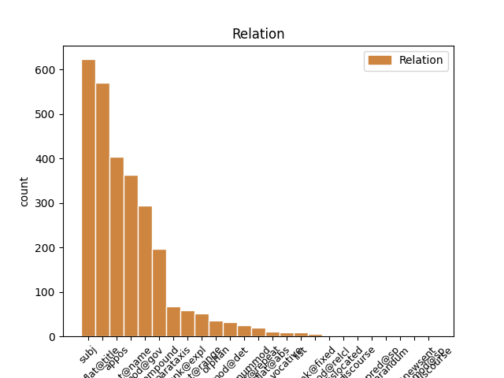
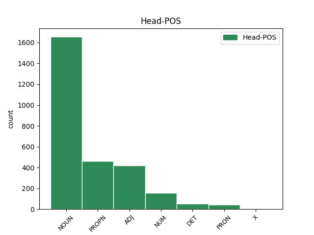
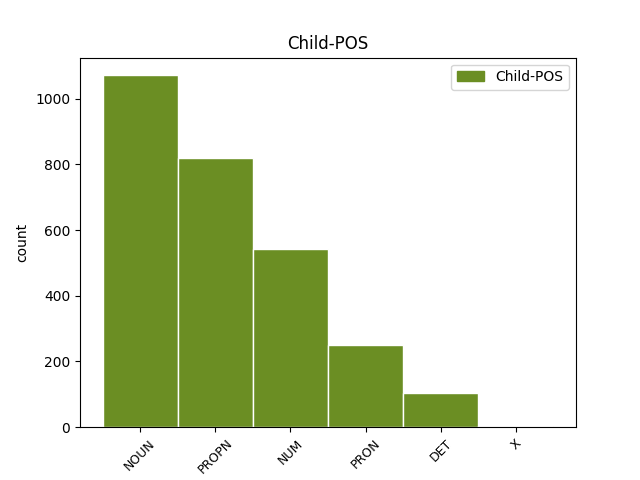

Distribution of features within this leaf



Agreement Rules sorted by frequency.
- When the dependent token is the flat multiword expression(flat@name) of the head token, and the head token is PROPN and the dependent token is PROPN.
1 Особливі _ _ _ _ 0 _ _ _
2 слова _ _ _ _ 0 _ _ _
3 подяки _ _ _ _ 0 _ _ _
4 релігійним _ _ _ _ 0 _ _ _
5 громадам _ _ _ _ 0 _ _ _
6 м _ _ _ _ 0 _ _ _
7 . _ _ _ _ 0 _ _ _
8 Кіцмань _ _ _ _ 0 _ _ _
9 та _ _ _ _ 0 _ _ _
10 с _ _ _ _ 0 _ _ _
11 . _ _ _ _ 0 _ _ _
12 Мамаївці _ _ _ _ 0 _ _ _
13 та _ _ _ _ 0 _ _ _
14 їхнім _ _ _ _ 0 _ _ _
15 настоятелям _ _ _ _ 0 _ _ _
16 - _ _ _ _ 0 _ _ _
17 отцям _ _ _ _ 0 _ _ _
18 Юрію _ _ _ _ 0 _ _ _
19 ( _ _ _ _ 0 _ _ _
20 Кав'юку _ _ _ _ 0 _ _ _
21 ) _ _ _ _ 0 _ _ _
22 та _ _ _ _ 0 _ _ _
23 Івану Іван PROPN Npmsdy Animacy=Anim|Case=Dat|Gender=Masc|NameType=Giv|Number=Sing 0 _ _ _
24 ( _ _ _ _ 0 _ _ _
25 Марковському Марковський PROPN Npmsdy Animacy=Anim|Case=Dat|Gender=Masc|NameType=Sur|Number=Sing 23 flat@name _ Id=39f6|LTranslit=Markovśkyj|SpaceAfter=No|Translit=Markovśkomu
26 ) _ _ _ _ 0 _ _ _
27 , _ _ _ _ 0 _ _ _
28 без _ _ _ _ 0 _ _ _
29 яких _ _ _ _ 0 _ _ _
30 ця _ _ _ _ 0 _ _ _
31 поїздка _ _ _ _ 0 _ _ _
32 була _ _ _ _ 0 _ _ _
33 б _ _ _ _ 0 _ _ _
34 просто _ _ _ _ 0 _ _ _
35 неможливою _ _ _ _ 0 _ _ _
36 . _ _ _ _ 0 _ _ _
1 Особливі _ _ _ _ 0 _ _ _
2 слова _ _ _ _ 0 _ _ _
3 подяки _ _ _ _ 0 _ _ _
4 релігійним _ _ _ _ 0 _ _ _
5 громадам _ _ _ _ 0 _ _ _
6 м _ _ _ _ 0 _ _ _
7 . _ _ _ _ 0 _ _ _
8 Кіцмань _ _ _ _ 0 _ _ _
9 та _ _ _ _ 0 _ _ _
10 с _ _ _ _ 0 _ _ _
11 . _ _ _ _ 0 _ _ _
12 Мамаївці _ _ _ _ 0 _ _ _
13 та _ _ _ _ 0 _ _ _
14 їхнім _ _ _ _ 0 _ _ _
15 настоятелям _ _ _ _ 0 _ _ _
16 - _ _ _ _ 0 _ _ _
17 отцям отець NOUN Ncmpdy Animacy=Anim|Case=Dat|Gender=Masc|Number=Plur 0 _ _ _
18 Юрію Юрій PROPN Npmsdy Animacy=Anim|Case=Dat|Gender=Masc|NameType=Giv|Number=Sing 17 flat@title _ Id=39ez|LTranslit=Jurij|Translit=Juriju
19 ( _ _ _ _ 0 _ _ _
20 Кав'юку _ _ _ _ 0 _ _ _
21 ) _ _ _ _ 0 _ _ _
22 та _ _ _ _ 0 _ _ _
23 Івану _ _ _ _ 0 _ _ _
24 ( _ _ _ _ 0 _ _ _
25 Марковському _ _ _ _ 0 _ _ _
26 ) _ _ _ _ 0 _ _ _
27 , _ _ _ _ 0 _ _ _
28 без _ _ _ _ 0 _ _ _
29 яких _ _ _ _ 0 _ _ _
30 ця _ _ _ _ 0 _ _ _
31 поїздка _ _ _ _ 0 _ _ _
32 була _ _ _ _ 0 _ _ _
33 б _ _ _ _ 0 _ _ _
34 просто _ _ _ _ 0 _ _ _
35 неможливою _ _ _ _ 0 _ _ _
36 . _ _ _ _ 0 _ _ _
1 Вона _ _ _ _ 0 _ _ _
2 виявила _ _ _ _ 0 _ _ _
3 готовність _ _ _ _ 0 _ _ _
4 виплатити _ _ _ _ 0 _ _ _
5 за _ _ _ _ 0 _ _ _
6 93%-й _ _ _ _ 0 _ _ _
7 пакет _ _ _ _ 0 _ _ _
8 акцій _ _ _ _ 0 _ _ _
9 « _ _ _ _ 0 _ _ _
10 Криворіжсталі _ _ _ _ 0 _ _ _
11 » _ _ _ _ 0 _ _ _
12 24 _ _ _ _ 0 _ _ _
13 млрд млрд NOUN Y Abbr=Yes|Animacy=Inan|Case=Gen|Gender=Masc|Number=Plur|NumType=Card|Uninflect=Yes 0 _ _ _
14 . _ _ _ _ 0 _ _ _
15 200 _ _ _ _ 0 _ _ _
16 млн _ _ _ _ 0 _ _ _
17 ₴ _ _ _ _ 0 _ _ _
18 . _ _ _ _ 0 _ _ _
19 ( _ _ _ _ 0 _ _ _
20 4 _ _ _ _ 0 _ _ _
21 , _ _ _ _ 0 _ _ _
22 8 _ _ _ _ 0 _ _ _
23 млрд млрд NOUN Y Abbr=Yes|Animacy=Inan|Case=Gen|Gender=Masc|Number=Plur|NumType=Card|Uninflect=Yes 13 appos _ Id=39m2|LTranslit=mlrd|Translit=mlrd
24 доларів _ _ _ _ 0 _ _ _
25 США _ _ _ _ 0 _ _ _
26 ) _ _ _ _ 0 _ _ _
27 , _ _ _ _ 0 _ _ _
28 що _ _ _ _ 0 _ _ _
29 в _ _ _ _ 0 _ _ _
30 2 _ _ _ _ 0 _ _ _
31 , _ _ _ _ 0 _ _ _
32 4 _ _ _ _ 0 _ _ _
33 рази _ _ _ _ 0 _ _ _
34 перевищує _ _ _ _ 0 _ _ _
35 стартову _ _ _ _ 0 _ _ _
36 ціну _ _ _ _ 0 _ _ _
37 і _ _ _ _ 0 _ _ _
38 в _ _ _ _ 0 _ _ _
39 5 _ _ _ _ 0 _ _ _
40 , _ _ _ _ 0 _ _ _
41 7 _ _ _ _ 0 _ _ _
42 рази _ _ _ _ 0 _ _ _
43 — _ _ _ _ 0 _ _ _
44 суму _ _ _ _ 0 _ _ _
45 , _ _ _ _ 0 _ _ _
46 отриману _ _ _ _ 0 _ _ _
47 за _ _ _ _ 0 _ _ _
48 підприємство _ _ _ _ 0 _ _ _
49 2004 _ _ _ _ 0 _ _ _
50 року _ _ _ _ 0 _ _ _
51 . _ _ _ _ 0 _ _ _
1 І _ _ _ _ 0 _ _ _
2 перший перший ADJ Mlomsn Case=Nom|Degree=Pos|Gender=Masc|Number=Sing|NumType=Ord 0 _ _ _
3 з _ _ _ _ 0 _ _ _
4 цих _ _ _ _ 0 _ _ _
5 ресурсів _ _ _ _ 0 _ _ _
6 - _ _ _ _ 0 _ _ _
7 усвідомлення усвідомлення NOUN Ncnsnn Animacy=Inan|Case=Nom|Gender=Neut|Number=Sing 2 subj _ Id=398g|LTranslit=usvidomlenńа|Translit=usvidomlenńа
8 як _ _ _ _ 0 _ _ _
9 таке _ _ _ _ 0 _ _ _
10 , _ _ _ _ 0 _ _ _
11 що _ _ _ _ 0 _ _ _
12 життя _ _ _ _ 0 _ _ _
13 можна _ _ _ _ 0 _ _ _
14 змінювати _ _ _ _ 0 _ _ _
15 . _ _ _ _ 0 _ _ _
1 Вона _ _ _ _ 0 _ _ _
2 виявила _ _ _ _ 0 _ _ _
3 готовність _ _ _ _ 0 _ _ _
4 виплатити _ _ _ _ 0 _ _ _
5 за _ _ _ _ 0 _ _ _
6 93%-й _ _ _ _ 0 _ _ _
7 пакет _ _ _ _ 0 _ _ _
8 акцій _ _ _ _ 0 _ _ _
9 « _ _ _ _ 0 _ _ _
10 Криворіжсталі _ _ _ _ 0 _ _ _
11 » _ _ _ _ 0 _ _ _
12 24 _ _ _ _ 0 _ _ _
13 млрд _ _ _ _ 0 _ _ _
14 . _ _ _ _ 0 _ _ _
15 200 _ _ _ _ 0 _ _ _
16 млн _ _ _ _ 0 _ _ _
17 ₴ _ _ _ _ 0 _ _ _
18 . _ _ _ _ 0 _ _ _
19 ( _ _ _ _ 0 _ _ _
20 4 _ _ _ _ 0 _ _ _
21 , _ _ _ _ 0 _ _ _
22 8 _ _ _ _ 0 _ _ _
23 млрд _ _ _ _ 0 _ _ _
24 доларів _ _ _ _ 0 _ _ _
25 США _ _ _ _ 0 _ _ _
26 ) _ _ _ _ 0 _ _ _
27 , _ _ _ _ 0 _ _ _
28 що _ _ _ _ 0 _ _ _
29 в _ _ _ _ 0 _ _ _
30 2 _ _ _ _ 0 _ _ _
31 , _ _ _ _ 0 _ _ _
32 4 _ _ _ _ 0 _ _ _
33 рази _ _ _ _ 0 _ _ _
34 перевищує _ _ _ _ 0 _ _ _
35 стартову _ _ _ _ 0 _ _ _
36 ціну _ _ _ _ 0 _ _ _
37 і _ _ _ _ 0 _ _ _
38 в _ _ _ _ 0 _ _ _
39 5 5 NUM Mlc-a Case=Acc|NumType=Card|Uninflect=Yes 0 _ _ _
40 , _ _ _ _ 0 _ _ _
41 7 7 NUM Mlc-a Case=Acc|NumType=Card|Uninflect=Yes 39 compound _ Id=3c95|LTranslit=7|Translit=7
42 рази _ _ _ _ 0 _ _ _
43 — _ _ _ _ 0 _ _ _
44 суму _ _ _ _ 0 _ _ _
45 , _ _ _ _ 0 _ _ _
46 отриману _ _ _ _ 0 _ _ _
47 за _ _ _ _ 0 _ _ _
48 підприємство _ _ _ _ 0 _ _ _
49 2004 _ _ _ _ 0 _ _ _
50 року _ _ _ _ 0 _ _ _
51 . _ _ _ _ 0 _ _ _
1 Ми _ _ _ _ 0 _ _ _
2 гордо _ _ _ _ 0 _ _ _
3 заявляємо _ _ _ _ 0 _ _ _
4 , _ _ _ _ 0 _ _ _
5 що _ _ _ _ 0 _ _ _
6 ми ми PRON Pp-1-ypnn Animacy=Anim|Case=Nom|Number=Plur|Person=1|PronType=Prs 14 subj _ Id=341l|LTranslit=my|Translit=my
7 некомерційна _ _ _ _ 0 _ _ _
8 , _ _ _ _ 0 _ _ _
9 не _ _ _ _ 0 _ _ _
10 корпоративна _ _ _ _ 0 _ _ _
11 і _ _ _ _ 0 _ _ _
12 не _ _ _ _ 0 _ _ _
13 скомпрометована _ _ _ _ 0 _ _ _
14 організація організація NOUN Ncfsnn Animacy=Inan|Case=Nom|Gender=Fem|Number=Sing 0 _ _ _
15 . _ _ _ _ 0 _ _ _
1 На _ _ _ _ 0 _ _ _
2 моє _ _ _ _ 0 _ _ _
3 запитання _ _ _ _ 0 _ _ _
4 пояснила _ _ _ _ 0 _ _ _
5 , _ _ _ _ 0 _ _ _
6 що _ _ _ _ 0 _ _ _
7 " _ _ _ _ 0 _ _ _
8 - _ _ _ _ 0 _ _ _
9 ті _ _ _ _ 0 _ _ _
10 слимаки слимак NOUN Ncmpny Animacy=Anim|Case=Nom|Gender=Masc|Number=Plur 14 subj _ Id=393f|LTranslit=slymak|SpaceAfter=No|Translit=slymaky
11 , _ _ _ _ 0 _ _ _
12 то _ _ _ _ 0 _ _ _
13 така _ _ _ _ 0 _ _ _
14 зараза зараза NOUN Ncfsnn Animacy=Inan|Case=Nom|Gender=Fem|Number=Sing 0 _ _ _
15 , _ _ _ _ 0 _ _ _
16 з'їдають _ _ _ _ 0 _ _ _
17 на _ _ _ _ 0 _ _ _
18 городі _ _ _ _ 0 _ _ _
19 чисто _ _ _ _ 0 _ _ _
20 все _ _ _ _ 0 _ _ _
21 ! _ _ _ _ 0 _ _ _
1 Без _ _ _ _ 0 _ _ _
2 цього _ _ _ _ 0 _ _ _
3 ти ти PRON Pp-2-ysnn Animacy=Anim|Case=Nom|Number=Sing|Person=2|PronType=Prs 4 subj _ Id=33yk|LTranslit=ty|Translit=ty
4 невидима невидимий ADJ Ao-fsns Case=Nom|Gender=Fem|Number=Sing 0 _ _ _
5 , _ _ _ _ 0 _ _ _
6 і _ _ _ _ 0 _ _ _
7 не _ _ _ _ 0 _ _ _
8 скажу _ _ _ _ 0 _ _ _
9 , _ _ _ _ 0 _ _ _
10 що _ _ _ _ 0 _ _ _
11 це _ _ _ _ 0 _ _ _
12 так _ _ _ _ 0 _ _ _
13 вже _ _ _ _ 0 _ _ _
14 й _ _ _ _ 0 _ _ _
15 погано _ _ _ _ 0 _ _ _
16 . _ _ _ _ 0 _ _ _
1 На _ _ _ _ 0 _ _ _
2 моє _ _ _ _ 0 _ _ _
3 запитання _ _ _ _ 0 _ _ _
4 пояснила _ _ _ _ 0 _ _ _
5 , _ _ _ _ 0 _ _ _
6 що _ _ _ _ 0 _ _ _
7 " _ _ _ _ 0 _ _ _
8 - _ _ _ _ 0 _ _ _
9 ті _ _ _ _ 0 _ _ _
10 слимаки _ _ _ _ 0 _ _ _
11 , _ _ _ _ 0 _ _ _
12 то то PRON Pd--nnsnn Animacy=Inan|Case=Nom|Gender=Neut|Number=Sing|PronType=Dem 14 unk@expl _ Id=393h|LTranslit=to|Translit=to
13 така _ _ _ _ 0 _ _ _
14 зараза зараза NOUN Ncfsnn Animacy=Inan|Case=Nom|Gender=Fem|Number=Sing 0 _ _ _
15 , _ _ _ _ 0 _ _ _
16 з'їдають _ _ _ _ 0 _ _ _
17 на _ _ _ _ 0 _ _ _
18 городі _ _ _ _ 0 _ _ _
19 чисто _ _ _ _ 0 _ _ _
20 все _ _ _ _ 0 _ _ _
21 ! _ _ _ _ 0 _ _ _
1 А _ _ _ _ 0 _ _ _
2 ще _ _ _ _ 0 _ _ _
3 благородніша _ _ _ _ 0 _ _ _
4 вона _ _ _ _ 0 _ _ _
5 тим _ _ _ _ 0 _ _ _
6 , _ _ _ _ 0 _ _ _
7 що _ _ _ _ 0 _ _ _
8 через _ _ _ _ 0 _ _ _
9 неї _ _ _ _ 0 _ _ _
10 і _ _ _ _ 0 _ _ _
11 завдяки _ _ _ _ 0 _ _ _
12 їй _ _ _ _ 0 _ _ _
13 можна _ _ _ _ 0 _ _ _
14 виявити _ _ _ _ 0 _ _ _
15 дуже _ _ _ _ 0 _ _ _
16 несимпатичну _ _ _ _ 0 _ _ _
17 породу _ _ _ _ 0 _ _ _
18 роду _ _ _ _ 0 _ _ _
19 людського _ _ _ _ 0 _ _ _
20 , _ _ _ _ 0 _ _ _
21 ту _ _ _ _ 0 _ _ _
22 породу _ _ _ _ 0 _ _ _
23 , _ _ _ _ 0 _ _ _
24 що _ _ _ _ 0 _ _ _
25 ганьбить _ _ _ _ 0 _ _ _
26 почесне _ _ _ _ 0 _ _ _
27 звання _ _ _ _ 0 _ _ _
28 охотника _ _ _ _ 0 _ _ _
29 - _ _ _ _ 0 _ _ _
30 людини _ _ _ _ 0 _ _ _
31 , _ _ _ _ 0 _ _ _
32 якій _ _ _ _ 0 _ _ _
33 є _ _ _ _ 0 _ _ _
34 назва назва NOUN Ncfsnn Animacy=Inan|Case=Nom|Gender=Fem|Number=Sing 0 _ _ _
35 браконьєр браконьєр NOUN Ncmsny Animacy=Anim|Case=Nom|Gender=Masc|Number=Sing 34 flat@title _ Id=32yz|LTranslit=brakońěr|SpaceAfter=No|Translit=brakońěr
36 . _ _ _ _ 0 _ _ _
1 Планую _ _ _ _ 0 _ _ _
2 короткотривалі _ _ _ _ 0 _ _ _
3 поїздки _ _ _ _ 0 _ _ _
4 в _ _ _ _ 0 _ _ _
5 різні _ _ _ _ 0 _ _ _
6 місця _ _ _ _ 0 _ _ _
7 в _ _ _ _ 0 _ _ _
8 Україні _ _ _ _ 0 _ _ _
9 , _ _ _ _ 0 _ _ _
10 1 1 NUM Mlcmsn Case=Nom|Gender=Masc|NumType=Card|Uninflect=Yes 0 _ _ _
11 - _ _ _ _ 0 _ _ _
12 3 3 NUM Mlc-n Case=Nom|NumType=Card|Uninflect=Yes 10 flat@range _ Id=2r2f|LTranslit=3|Translit=3
13 дні _ _ _ _ 0 _ _ _
14 . _ _ _ _ 0 _ _ _
1 « _ _ _ _ 0 _ _ _
2 Чому _ _ _ _ 0 _ _ _
3 такі такий DET Pd---npaa Animacy=Inan|Case=Acc|Number=Plur|PronType=Dem 4 mod@det _ Id=2dte|LTranslit=takyj|Translit=taki
4 представницькі представницький ADJ Ao--pasn Animacy=Inan|Case=Acc|Number=Plur 0 _ _ _
5 змагання _ _ _ _ 0 _ _ _
6 вирішили _ _ _ _ 0 _ _ _
7 проводити _ _ _ _ 0 _ _ _
8 саме _ _ _ _ 0 _ _ _
9 у _ _ _ _ 0 _ _ _
10 нас _ _ _ _ 0 _ _ _
11 ? _ _ _ _ 0 _ _ _
1 – _ _ _ _ 0 _ _ _
2 У _ _ _ _ 0 _ _ _
3 її _ _ _ _ 0 _ _ _
4 рамках _ _ _ _ 0 _ _ _
5 пройдуть _ _ _ _ 0 _ _ _
6 змагання _ _ _ _ 0 _ _ _
7 бригад _ _ _ _ 0 _ _ _
8 екстреної _ _ _ _ 0 _ _ _
9 медичної _ _ _ _ 0 _ _ _
10 допомоги _ _ _ _ 0 _ _ _
11 з _ _ _ _ 0 _ _ _
12 міжнародною _ _ _ _ 0 _ _ _
13 участю _ _ _ _ 0 _ _ _
14 « _ _ _ _ 0 _ _ _
15 Сумські _ _ _ _ 0 _ _ _
16 медичні _ _ _ _ 0 _ _ _
17 ралі ралі NOUN Ncnpnn Animacy=Inan|Case=Nom|Gender=Neut|Number=Plur|Uninflect=Yes 0 _ _ _
18 - _ _ _ _ 0 _ _ _
19 2017 2017 NUM Mlc-n Case=Nom|NumType=Card|Uninflect=Yes 17 flat@title _ Id=2dny|LTranslit=2017|SpaceAfter=No|Translit=2017
20 » _ _ _ _ 0 _ _ _
21 . _ _ _ _ 0 _ _ _
1 А _ _ _ _ 0 _ _ _
2 Волтер Волтер PROPN Npmsny Animacy=Anim|Case=Nom|Gender=Masc|NameType=Sur|Number=Sing 7 subj _ Id=2pw9|LTranslit=Volter|Translit=Volter
3 - _ _ _ _ 0 _ _ _
4 це _ _ _ _ 0 _ _ _
5 не _ _ _ _ 0 _ _ _
6 просто _ _ _ _ 0 _ _ _
7 чарівник чарівник NOUN Ncmsny Animacy=Anim|Case=Nom|Gender=Masc|Number=Sing 0 _ _ _
8 в _ _ _ _ 0 _ _ _
9 чорній _ _ _ _ 0 _ _ _
10 сорочці _ _ _ _ 0 _ _ _
11 і _ _ _ _ 0 _ _ _
12 з _ _ _ _ 0 _ _ _
13 усім _ _ _ _ 0 _ _ _
14 цим _ _ _ _ 0 _ _ _
15 набором _ _ _ _ 0 _ _ _
16 магічних _ _ _ _ 0 _ _ _
17 фетишів _ _ _ _ 0 _ _ _
18 , _ _ _ _ 0 _ _ _
19 які _ _ _ _ 0 _ _ _
20 вони _ _ _ _ 0 _ _ _
21 понапозичали _ _ _ _ 0 _ _ _
22 з _ _ _ _ 0 _ _ _
23 серіалів _ _ _ _ 0 _ _ _
24 про _ _ _ _ 0 _ _ _
25 чародійок _ _ _ _ 0 _ _ _
26 . _ _ _ _ 0 _ _ _
1 В _ _ _ _ 0 _ _ _
2 селі _ _ _ _ 0 _ _ _
3 Казавчині _ _ _ _ 0 _ _ _
4 , _ _ _ _ 0 _ _ _
5 ще _ _ _ _ 0 _ _ _
6 далі _ _ _ _ 0 _ _ _
7 на _ _ _ _ 0 _ _ _
8 північ _ _ _ _ 0 _ _ _
9 , _ _ _ _ 0 _ _ _
10 на _ _ _ _ 0 _ _ _
11 так _ _ _ _ 0 _ _ _
12 зв _ _ _ _ 0 _ _ _
13 . _ _ _ _ 0 _ _ _
14 скелі _ _ _ _ 0 _ _ _
15 Ржевуського _ _ _ _ 0 _ _ _
16 був _ _ _ _ 0 _ _ _
17 арабський _ _ _ _ 0 _ _ _
18 напис _ _ _ _ 0 _ _ _
19 про _ _ _ _ 0 _ _ _
20 якогось _ _ _ _ 0 _ _ _
21 татарського _ _ _ _ 0 _ _ _
22 баскака _ _ _ _ 0 _ _ _
23 від _ _ _ _ 0 _ _ _
24 XIV _ _ _ _ 0 _ _ _
25 ст _ _ _ _ 0 _ _ _
26 . _ _ _ _ 0 _ _ _
27 — _ _ _ _ 0 _ _ _
28 звістка _ _ _ _ 0 _ _ _
29 ця _ _ _ _ 0 _ _ _
30 йде _ _ _ _ 0 _ _ _
31 від _ _ _ _ 0 _ _ _
32 Марчинського Марчинський PROPN Npmsgy Animacy=Anim|Case=Gen|Gender=Masc|NameType=Sur|Number=Sing 0 _ _ _
33 , _ _ _ _ 0 _ _ _
34 подільського _ _ _ _ 0 _ _ _
35 діяча діяч NOUN Ncmsgy Animacy=Anim|Case=Gen|Gender=Masc|Number=Sing 32 appos _ Id=2vu8|LTranslit=dijač|SpaceAfter=No|Translit=dijača
36 - _ _ _ _ 0 _ _ _
37 краєзнавця _ _ _ _ 0 _ _ _
38 першої _ _ _ _ 0 _ _ _
39 половини _ _ _ _ 0 _ _ _
40 XIX _ _ _ _ 0 _ _ _
41 ст _ _ _ _ 0 _ _ _
42 . _ _ _ _ 0 _ _ _
43 і _ _ _ _ 0 _ _ _
44 лишається _ _ _ _ 0 _ _ _
45 на _ _ _ _ 0 _ _ _
46 його _ _ _ _ 0 _ _ _
47 відповідальності _ _ _ _ 0 _ _ _
48 ; _ _ _ _ 0 _ _ _
49 Є _ _ _ _ 0 _ _ _
50 . _ _ _ _ 0 _ _ _
51 Сіцінському _ _ _ _ 0 _ _ _
52 , _ _ _ _ 0 _ _ _
53 що _ _ _ _ 0 _ _ _
54 складав _ _ _ _ 0 _ _ _
55 археологічну _ _ _ _ 0 _ _ _
56 мапу _ _ _ _ 0 _ _ _
57 Поділля _ _ _ _ 0 _ _ _
58 , _ _ _ _ 0 _ _ _
59 цього _ _ _ _ 0 _ _ _
60 напису _ _ _ _ 0 _ _ _
61 не _ _ _ _ 0 _ _ _
62 вдалося _ _ _ _ 0 _ _ _
63 знайти _ _ _ _ 0 _ _ _
64 . _ _ _ _ 0 _ _ _
1 Я _ _ _ _ 0 _ _ _
2 більше _ _ _ _ 0 _ _ _
3 ніде _ _ _ _ 0 _ _ _
4 не _ _ _ _ 0 _ _ _
5 бачила _ _ _ _ 0 _ _ _
6 , _ _ _ _ 0 _ _ _
7 щоб _ _ _ _ 0 _ _ _
8 єврейський _ _ _ _ 0 _ _ _
9 квартал _ _ _ _ 0 _ _ _
10 крім _ _ _ _ 0 _ _ _
11 пласту _ _ _ _ 0 _ _ _
12 історії _ _ _ _ 0 _ _ _
13 , _ _ _ _ 0 _ _ _
14 спогадів _ _ _ _ 0 _ _ _
15 , _ _ _ _ 0 _ _ _
16 синагоги _ _ _ _ 0 _ _ _
17 і _ _ _ _ 0 _ _ _
18 кількох кілька DET Mlc-g Case=Gen|NumType=Card|PronType=Ind 20 det@nummod _ Id=2pp7|LTranslit=kiľka|Translit=kiľkoch
19 меморіальних _ _ _ _ 0 _ _ _
20 комплексів комплекс NOUN Ncmpgn Animacy=Inan|Case=Gen|Gender=Masc|Number=Plur 0 _ _ _
21 мав _ _ _ _ 0 _ _ _
22 ще _ _ _ _ 0 _ _ _
23 щось _ _ _ _ 0 _ _ _
24 цікаве _ _ _ _ 0 _ _ _
25 . _ _ _ _ 0 _ _ _
1 Залюбки _ _ _ _ 0 _ _ _
2 цитований _ _ _ _ 0 _ _ _
3 в _ _ _ _ 0 _ _ _
4 історичній _ _ _ _ 0 _ _ _
5 літературі _ _ _ _ 0 _ _ _
6 мандрівник мандрівник NOUN Ncmsny Animacy=Anim|Case=Nom|Gender=Masc|Number=Sing 0 _ _ _
7 ( _ _ _ _ 0 _ _ _
8 20-ті _ _ _ _ 0 _ _ _
9 роки рік NOUN Ncmpnn Animacy=Inan|Case=Nom|Gender=Masc|Number=Plur 6 parataxis _ Id=2vp7|LTranslit=rik|Translit=roky
10 XV _ _ _ _ 0 _ _ _
11 ст _ _ _ _ 0 _ _ _
12 . _ _ _ _ 0 _ _ _
13 ) _ _ _ _ 0 _ _ _
14 Ланоа _ _ _ _ 0 _ _ _
15 докладно _ _ _ _ 0 _ _ _
16 оповідає _ _ _ _ 0 _ _ _
17 про _ _ _ _ 0 _ _ _
18 татарську _ _ _ _ 0 _ _ _
19 людність _ _ _ _ 0 _ _ _
20 району _ _ _ _ 0 _ _ _
21 поміж _ _ _ _ 0 _ _ _
22 Дністром _ _ _ _ 0 _ _ _
23 та _ _ _ _ 0 _ _ _
24 Дніпром _ _ _ _ 0 _ _ _
25 , _ _ _ _ 0 _ _ _
26 що _ _ _ _ 0 _ _ _
27 перебувала _ _ _ _ 0 _ _ _
28 тут _ _ _ _ 0 _ _ _
29 під _ _ _ _ 0 _ _ _
30 зверхністю _ _ _ _ 0 _ _ _
31 Витовта _ _ _ _ 0 _ _ _
32 , _ _ _ _ 0 _ _ _
33 але _ _ _ _ 0 _ _ _
34 із _ _ _ _ 0 _ _ _
35 своїми _ _ _ _ 0 _ _ _
36 тубільними _ _ _ _ 0 _ _ _
37 князьками _ _ _ _ 0 _ _ _
38 . _ _ _ _ 0 _ _ _
1 Більше _ _ _ _ 0 _ _ _
2 , _ _ _ _ 0 _ _ _
3 ніж _ _ _ _ 0 _ _ _
4 новини _ _ _ _ 0 _ _ _
5 про _ _ _ _ 0 _ _ _
6 перекриття _ _ _ _ 0 _ _ _
7 частини _ _ _ _ 0 _ _ _
8 Сагайдачного _ _ _ _ 0 _ _ _
9 і _ _ _ _ 0 _ _ _
10 40 _ _ _ _ 0 _ _ _
11 метрів _ _ _ _ 0 _ _ _
12 ЯрВалу _ _ _ _ 0 _ _ _
13 , _ _ _ _ 0 _ _ _
14 мене _ _ _ _ 0 _ _ _
15 радує _ _ _ _ 0 _ _ _
16 тільки _ _ _ _ 0 _ _ _
17 взривання _ _ _ _ 0 _ _ _
18 пуканів _ _ _ _ 0 _ _ _
19 водіїв _ _ _ _ 0 _ _ _
20 , _ _ _ _ 0 _ _ _
21 які який DET Pr----pna Case=Nom|Number=Plur|PronType=Rel 22 subj _ Id=2pm2|LTranslit=jakyj|Translit=jaki
22 впевнені впевнений ADJ Ap--pns-ep Aspect=Perf|Case=Nom|Degree=Pos|Number=Plur|VerbForm=Part|Voice=Pass 0 _ _ _
23 , _ _ _ _ 0 _ _ _
24 що _ _ _ _ 0 _ _ _
25 місто _ _ _ _ 0 _ _ _
26 існує _ _ _ _ 0 _ _ _
27 тільки _ _ _ _ 0 _ _ _
28 для _ _ _ _ 0 _ _ _
29 їхніх _ _ _ _ 0 _ _ _
30 гавнотачок _ _ _ _ 0 _ _ _
1 „ _ _ _ _ 0 _ _ _
2 Опис _ _ _ _ 0 _ _ _
3 Очаківського _ _ _ _ 0 _ _ _
4 степу _ _ _ _ 0 _ _ _
5 " _ _ _ _ 0 _ _ _
6 знає _ _ _ _ 0 _ _ _
7 , _ _ _ _ 0 _ _ _
8 напр _ _ _ _ 0 _ _ _
9 . _ _ _ _ 0 _ _ _
10 , _ _ _ _ 0 _ _ _
11 низку _ _ _ _ 0 _ _ _
12 шляхових _ _ _ _ 0 _ _ _
13 споруд _ _ _ _ 0 _ _ _
14 ( _ _ _ _ 0 _ _ _
15 кам’яні _ _ _ _ 0 _ _ _
16 мости _ _ _ _ 0 _ _ _
17 на _ _ _ _ 0 _ _ _
18 Тилигулі _ _ _ _ 0 _ _ _
19 , _ _ _ _ 0 _ _ _
20 Цареголі _ _ _ _ 0 _ _ _
21 , _ _ _ _ 0 _ _ _
22 Березані _ _ _ _ 0 _ _ _
23 — _ _ _ _ 0 _ _ _
24 на _ _ _ _ 0 _ _ _
25 головному _ _ _ _ 0 _ _ _
26 шляху _ _ _ _ 0 _ _ _
27 з _ _ _ _ 0 _ _ _
28 Бендеру _ _ _ _ 0 _ _ _
29 до _ _ _ _ 0 _ _ _
30 Очакова _ _ _ _ 0 _ _ _
31 , _ _ _ _ 0 _ _ _
32 караван караван NOUN Ncmsnn Animacy=Inan|Case=Nom|Gender=Masc|Number=Sing 34 compound _ Id=2vxq|LTranslit=karavan|SpaceAfter=No|Translit=karavan
33 - _ _ _ _ 0 _ _ _
34 сараї сарай NOUN Ncmpnn Animacy=Inan|Case=Nom|Gender=Masc|Number=Plur 0 _ _ _
35 в _ _ _ _ 0 _ _ _
36 напрямку _ _ _ _ 0 _ _ _
37 з _ _ _ _ 0 _ _ _
38 Дубосар _ _ _ _ 0 _ _ _
39 до _ _ _ _ 0 _ _ _
40 Балти _ _ _ _ 0 _ _ _
41 ; _ _ _ _ 0 _ _ _
42 мапи _ _ _ _ 0 _ _ _
43 того _ _ _ _ 0 _ _ _
44 ж _ _ _ _ 0 _ _ _
45 часу _ _ _ _ 0 _ _ _
46 відзначають _ _ _ _ 0 _ _ _
47 і _ _ _ _ 0 _ _ _
48 „ _ _ _ _ 0 _ _ _
49 вами _ _ _ _ 0 _ _ _
50 “ _ _ _ _ 0 _ _ _
51 , _ _ _ _ 0 _ _ _
52 митниці _ _ _ _ 0 _ _ _
53 в _ _ _ _ 0 _ _ _
54 північно _ _ _ _ 0 _ _ _
55 - _ _ _ _ 0 _ _ _
56 західній _ _ _ _ 0 _ _ _
57 частині _ _ _ _ 0 _ _ _
58 Очаківського _ _ _ _ 0 _ _ _
59 степу _ _ _ _ 0 _ _ _
60 на _ _ _ _ 0 _ _ _
61 польському _ _ _ _ 0 _ _ _
62 кордоні _ _ _ _ 0 _ _ _
63 . _ _ _ _ 0 _ _ _
1 " _ _ _ _ 0 _ _ _
2 Він _ _ _ _ 0 _ _ _
3 створив _ _ _ _ 0 _ _ _
4 там _ _ _ _ 0 _ _ _
5 таку _ _ _ _ 0 _ _ _
6 атмосферу _ _ _ _ 0 _ _ _
7 , _ _ _ _ 0 _ _ _
8 що _ _ _ _ 0 _ _ _
9 , _ _ _ _ 0 _ _ _
10 крім _ _ _ _ 0 _ _ _
11 захоплення _ _ _ _ 0 _ _ _
12 роботою _ _ _ _ 0 _ _ _
13 , _ _ _ _ 0 _ _ _
14 все _ _ _ _ 0 _ _ _
15 інше інше PRON Pi--nnsna Animacy=Inan|Case=Nom|Gender=Neut|Number=Sing|PronType=Ind 0 _ _ _
16 – _ _ _ _ 0 _ _ _
17 і _ _ _ _ 0 _ _ _
18 наше _ _ _ _ 0 _ _ _
19 особисте _ _ _ _ 0 _ _ _
20 життя життя NOUN Ncnsnn Animacy=Inan|Case=Nom|Gender=Neut|Number=Sing 15 appos _ Id=212j|LTranslit=žytťа|SpaceAfter=No|Translit=žytťа
21 , _ _ _ _ 0 _ _ _
22 і _ _ _ _ 0 _ _ _
23 наша _ _ _ _ 0 _ _ _
24 побутова _ _ _ _ 0 _ _ _
25 метушня _ _ _ _ 0 _ _ _
26 – _ _ _ _ 0 _ _ _
27 було _ _ _ _ 0 _ _ _
28 тільки _ _ _ _ 0 _ _ _
29 паливом _ _ _ _ 0 _ _ _
30 , _ _ _ _ 0 _ _ _
31 яке _ _ _ _ 0 _ _ _
32 , _ _ _ _ 0 _ _ _
33 згоряючи _ _ _ _ 0 _ _ _
34 , _ _ _ _ 0 _ _ _
35 перетворювалось _ _ _ _ 0 _ _ _
36 на _ _ _ _ 0 _ _ _
37 натхненну _ _ _ _ 0 _ _ _
38 працю _ _ _ _ 0 _ _ _
39 , _ _ _ _ 0 _ _ _
40 – _ _ _ _ 0 _ _ _
41 згадує _ _ _ _ 0 _ _ _
42 Євгенія _ _ _ _ 0 _ _ _
43 Стрєлкова _ _ _ _ 0 _ _ _
44 , _ _ _ _ 0 _ _ _
45 яка _ _ _ _ 0 _ _ _
46 займалася _ _ _ _ 0 _ _ _
47 в _ _ _ _ 0 _ _ _
48 акторській _ _ _ _ 0 _ _ _
49 студії _ _ _ _ 0 _ _ _
50 Курбаса _ _ _ _ 0 _ _ _
51 . _ _ _ _ 0 _ _ _
1 Ти _ _ _ _ 0 _ _ _
2 справедливо _ _ _ _ 0 _ _ _
3 скажеш _ _ _ _ 0 _ _ _
4 на _ _ _ _ 0 _ _ _
5 це _ _ _ _ 0 _ _ _
6 : _ _ _ _ 0 _ _ _
7 одна _ _ _ _ 0 _ _ _
8 ластівка _ _ _ _ 0 _ _ _
9 ще _ _ _ _ 0 _ _ _
10 не _ _ _ _ 0 _ _ _
11 робить _ _ _ _ 0 _ _ _
12 весни _ _ _ _ 0 _ _ _
13 ; _ _ _ _ 0 _ _ _
14 але _ _ _ _ 0 _ _ _
15 ж _ _ _ _ 0 _ _ _
16 з _ _ _ _ 0 _ _ _
17 свого _ _ _ _ 0 _ _ _
18 боку _ _ _ _ 0 _ _ _
19 ми _ _ _ _ 0 _ _ _
20 теж _ _ _ _ 0 _ _ _
21 справедливо _ _ _ _ 0 _ _ _
22 відзначимо _ _ _ _ 0 _ _ _
23 , _ _ _ _ 0 _ _ _
24 що _ _ _ _ 0 _ _ _
25 : _ _ _ _ 0 _ _ _
26 хіба _ _ _ _ 0 _ _ _
27 це _ _ _ _ 0 _ _ _
28 не _ _ _ _ 0 _ _ _
29 ти _ _ _ _ 0 _ _ _
30 , _ _ _ _ 0 _ _ _
31 друже _ _ _ _ 0 _ _ _
32 , _ _ _ _ 0 _ _ _
33 з _ _ _ _ 0 _ _ _
34 таким _ _ _ _ 0 _ _ _
35 захопленням _ _ _ _ 0 _ _ _
36 біг _ _ _ _ 0 _ _ _
37 до _ _ _ _ 0 _ _ _
38 театру _ _ _ _ 0 _ _ _
39 , _ _ _ _ 0 _ _ _
40 де _ _ _ _ 0 _ _ _
41 йдуть _ _ _ _ 0 _ _ _
42 — _ _ _ _ 0 _ _ _
43 " _ _ _ _ 0 _ _ _
44 97 _ _ _ _ 0 _ _ _
45 " _ _ _ _ 0 _ _ _
46 , _ _ _ _ 0 _ _ _
47 " _ _ _ _ 0 _ _ _
48 Любов _ _ _ _ 0 _ _ _
49 і _ _ _ _ 0 _ _ _
50 дим _ _ _ _ 0 _ _ _
51 " _ _ _ _ 0 _ _ _
52 , _ _ _ _ 0 _ _ _
53 " _ _ _ _ 0 _ _ _
54 Яблуневий _ _ _ _ 0 _ _ _
55 полон _ _ _ _ 0 _ _ _
56 " _ _ _ _ 0 _ _ _
57 , _ _ _ _ 0 _ _ _
58 " _ _ _ _ 0 _ _ _
59 Комуна _ _ _ _ 0 _ _ _
60 в _ _ _ _ 0 _ _ _
61 степах _ _ _ _ 0 _ _ _
62 " _ _ _ _ 0 _ _ _
63 — _ _ _ _ 0 _ _ _
64 одним _ _ _ _ 0 _ _ _
65 словом _ _ _ _ 0 _ _ _
66 , _ _ _ _ 0 _ _ _
67 хіба _ _ _ _ 0 _ _ _
68 своїми _ _ _ _ 0 _ _ _
69 оплесками _ _ _ _ 0 _ _ _
70 ти _ _ _ _ 0 _ _ _
71 не _ _ _ _ 0 _ _ _
72 вітаєш _ _ _ _ 0 _ _ _
73 т т. NOUN Y Abbr=Yes|Animacy=Anim|Case=Acc|Gender=Masc|Number=Sing|Uninflect=Yes 0 _ _ _
74 . _ _ _ _ 0 _ _ _
75 т т. NOUN Y Abbr=Yes|Animacy=Anim|Case=Acc|Gender=Masc|Number=Sing|Uninflect=Yes 73 flat@repeat _ Id=2veb|LTranslit=t.|SpaceAfter=No|Translit=t
76 . _ _ _ _ 0 _ _ _
77 М _ _ _ _ 0 _ _ _
78 . _ _ _ _ 0 _ _ _
79 Куліша _ _ _ _ 0 _ _ _
80 і _ _ _ _ 0 _ _ _
81 І _ _ _ _ 0 _ _ _
82 . _ _ _ _ 0 _ _ _
83 Дніпровського _ _ _ _ 0 _ _ _
84 , _ _ _ _ 0 _ _ _
85 що _ _ _ _ 0 _ _ _
86 є _ _ _ _ 0 _ _ _
87 членами _ _ _ _ 0 _ _ _
88 Вапліте _ _ _ _ 0 _ _ _
89 ? _ _ _ _ 0 _ _ _
1 Головні _ _ _ _ 0 _ _ _
2 ролі _ _ _ _ 0 _ _ _
3 у _ _ _ _ 0 _ _ _
4 стрічці _ _ _ _ 0 _ _ _
5 виконують _ _ _ _ 0 _ _ _
6 Руні _ _ _ _ 0 _ _ _
7 Мара _ _ _ _ 0 _ _ _
8 ( _ _ _ _ 0 _ _ _
9 продавчиня _ _ _ _ 0 _ _ _
10 ) _ _ _ _ 0 _ _ _
11 і _ _ _ _ 0 _ _ _
12 Кейт Кейт PROPN Npfsny Animacy=Anim|Case=Nom|Gender=Fem|NameType=Giv|Number=Sing|Uninflect=Yes 0 _ _ _
13 Бланшет _ _ _ _ 0 _ _ _
14 ( _ _ _ _ 0 _ _ _
15 Керол Керол PROPN Npfsny Animacy=Anim|Case=Nom|Gender=Fem|NameType=Giv|Number=Sing|Uninflect=Yes 12 appos _ Id=2dj5|LTranslit=Kerol|SpaceAfter=No|Translit=Kerol
16 ) _ _ _ _ 0 _ _ _
17 . _ _ _ _ 0 _ _ _
1 Якщо _ _ _ _ 0 _ _ _
2 ви _ _ _ _ 0 _ _ _
3 подивилися _ _ _ _ 0 _ _ _
4 фільм _ _ _ _ 0 _ _ _
5 , _ _ _ _ 0 _ _ _
6 то _ _ _ _ 0 _ _ _
7 знайте _ _ _ _ 0 _ _ _
8 , _ _ _ _ 0 _ _ _
9 що _ _ _ _ 0 _ _ _
10 книжка книжка NOUN Ncfsnn Animacy=Inan|Case=Nom|Gender=Fem|Number=Sing 13 subj _ Id=2puz|LTranslit=knyžka|Translit=knyžka
11 зовсім _ _ _ _ 0 _ _ _
12 не _ _ _ _ 0 _ _ _
13 така такий DET Pd--f-sna Case=Nom|Gender=Fem|Number=Sing|PronType=Dem 0 _ _ _
14 і _ _ _ _ 0 _ _ _
15 не _ _ _ _ 0 _ _ _
16 про _ _ _ _ 0 _ _ _
17 те _ _ _ _ 0 _ _ _
18 . _ _ _ _ 0 _ _ _
1 Співрозмовники _ _ _ _ 0 _ _ _
2 УП _ _ _ _ 0 _ _ _
3 , _ _ _ _ 0 _ _ _
4 знайомі _ _ _ _ 0 _ _ _
5 з _ _ _ _ 0 _ _ _
6 матеріалами _ _ _ _ 0 _ _ _
7 кримінального _ _ _ _ 0 _ _ _
8 провадження _ _ _ _ 0 _ _ _
9 , _ _ _ _ 0 _ _ _
10 звертають _ _ _ _ 0 _ _ _
11 увагу _ _ _ _ 0 _ _ _
12 на _ _ _ _ 0 _ _ _
13 те _ _ _ _ 0 _ _ _
14 , _ _ _ _ 0 _ _ _
15 що _ _ _ _ 0 _ _ _
16 єдиний єдиний ADJ Ao-msnf Case=Nom|Gender=Masc|Number=Sing 0 _ _ _
17 із _ _ _ _ 0 _ _ _
18 затриманих _ _ _ _ 0 _ _ _
19 , _ _ _ _ 0 _ _ _
20 хто _ _ _ _ 0 _ _ _
21 мав _ _ _ _ 0 _ _ _
22 відношення _ _ _ _ 0 _ _ _
23 до _ _ _ _ 0 _ _ _
24 МВС _ _ _ _ 0 _ _ _
25 – _ _ _ _ 0 _ _ _
26 Павло Павло PROPN Npmsny Animacy=Anim|Case=Nom|Gender=Masc|NameType=Giv|Number=Sing 16 subj _ Id=2awo|LTranslit=Pavlo|Translit=Pavlo
27 Полчанов _ _ _ _ 0 _ _ _
28 . _ _ _ _ 0 _ _ _
1 До _ _ _ _ 0 _ _ _
2 того _ _ _ _ 0 _ _ _
3 ж _ _ _ _ 0 _ _ _
4 , _ _ _ _ 0 _ _ _
5 за _ _ _ _ 0 _ _ _
6 висновками _ _ _ _ 0 _ _ _
7 наших _ _ _ _ 0 _ _ _
8 партнерів _ _ _ _ 0 _ _ _
9 - _ _ _ _ 0 _ _ _
10 хіміків _ _ _ _ 0 _ _ _
11 із _ _ _ _ 0 _ _ _
12 Національного _ _ _ _ 0 _ _ _
13 науково _ _ _ _ 0 _ _ _
14 - _ _ _ _ 0 _ _ _
15 дослідного _ _ _ _ 0 _ _ _
16 реставраційного _ _ _ _ 0 _ _ _
17 центру _ _ _ _ 0 _ _ _
18 України _ _ _ _ 0 _ _ _
19 та _ _ _ _ 0 _ _ _
20 бюро _ _ _ _ 0 _ _ _
21 технічної _ _ _ _ 0 _ _ _
22 експертизи _ _ _ _ 0 _ _ _
23 « _ _ _ _ 0 _ _ _
24 Артлаб _ _ _ _ 0 _ _ _
25 » _ _ _ _ 0 _ _ _
26 , _ _ _ _ 0 _ _ _
27 пігменти _ _ _ _ 0 _ _ _
28 , _ _ _ _ 0 _ _ _
29 застосовані _ _ _ _ 0 _ _ _
30 у _ _ _ _ 0 _ _ _
31 фарбах _ _ _ _ 0 _ _ _
32 , _ _ _ _ 0 _ _ _
33 на _ _ _ _ 0 _ _ _
34 всіх _ _ _ _ 0 _ _ _
35 трьох _ _ _ _ 0 _ _ _
36 частинах _ _ _ _ 0 _ _ _
37 « _ _ _ _ 0 _ _ _
38 Спокуси _ _ _ _ 0 _ _ _
39 св _ _ _ _ 0 _ _ _
40 . _ _ _ _ 0 _ _ _
41 Антонія _ _ _ _ 0 _ _ _
42 » _ _ _ _ 0 _ _ _
43 виявилися _ _ _ _ 0 _ _ _
44 автентичними _ _ _ _ 0 _ _ _
45 : _ _ _ _ 0 _ _ _
46 кістяна _ _ _ _ 0 _ _ _
47 чорна _ _ _ _ 0 _ _ _
48 , _ _ _ _ 0 _ _ _
49 азурит _ _ _ _ 0 _ _ _
50 , _ _ _ _ 0 _ _ _
51 натуральний _ _ _ _ 0 _ _ _
52 ультрамарин _ _ _ _ 0 _ _ _
53 , _ _ _ _ 0 _ _ _
54 малахіт _ _ _ _ 0 _ _ _
55 і _ _ _ _ 0 _ _ _
56 кіновар _ _ _ _ 0 _ _ _
57 — _ _ _ _ 0 _ _ _
58 той _ _ _ _ 0 _ _ _
59 самий _ _ _ _ 0 _ _ _
60 обмежений _ _ _ _ 0 _ _ _
61 репертуар _ _ _ _ 0 _ _ _
62 , _ _ _ _ 0 _ _ _
63 що _ _ _ _ 0 _ _ _
64 був _ _ _ _ 0 _ _ _
65 доступний _ _ _ _ 0 _ _ _
66 живописцям живописець NOUN Ncmpdy Animacy=Anim|Case=Dat|Gender=Masc|Number=Plur 0 _ _ _
67 XV _ _ _ _ 0 _ _ _
68 – _ _ _ _ 0 _ _ _
69 XVI _ _ _ _ 0 _ _ _
70 століття _ _ _ _ 0 _ _ _
71 , _ _ _ _ 0 _ _ _
72 зокрема _ _ _ _ 0 _ _ _
73 Ієронімусові Ієронімус PROPN Npmsdy Animacy=Anim|Case=Dat|Gender=Masc|NameType=Giv|Number=Sing 66 appos _ Id=281f|LTranslit=Iěronimus|Translit=Iěronimusovi
74 Босху _ _ _ _ 0 _ _ _
75 та _ _ _ _ 0 _ _ _
76 його _ _ _ _ 0 _ _ _
77 помічникам _ _ _ _ 0 _ _ _
78 . _ _ _ _ 0 _ _ _
1 А _ _ _ _ 0 _ _ _
2 за _ _ _ _ 0 _ _ _
3 людським _ _ _ _ 0 _ _ _
4 характером _ _ _ _ 0 _ _ _
5 хто хто PRON Pq--mysnn Animacy=Anim|Case=Nom|Gender=Masc|Number=Sing|PronType=Int 0 _ _ _
6 ти ти PRON Pp-2-ysnn Animacy=Anim|Case=Nom|Number=Sing|Person=2|PronType=Prs 5 subj _ Id=217h|LTranslit=ty|SpaceAfter=No|Translit=ty
7 ? _ _ _ _ 0 _ _ _
1 Вона вона PRON Pp-3f-snn Case=Nom|Gender=Fem|Number=Sing|Person=3|PronType=Prs 3 subj _ Id=1pc9|LTranslit=vona|Translit=Vona
2 — _ _ _ _ 0 _ _ _
3 один один DET Pi--m-sna Case=Nom|Gender=Masc|Number=Sing|PronType=Ind 0 _ _ _
4 з _ _ _ _ 0 _ _ _
5 моїх _ _ _ _ 0 _ _ _
6 найкращих _ _ _ _ 0 _ _ _
7 друзів _ _ _ _ 0 _ _ _
8 у _ _ _ _ 0 _ _ _
9 світі _ _ _ _ 0 _ _ _
10 . _ _ _ _ 0 _ _ _
1 При _ _ _ _ 0 _ _ _
2 спробі _ _ _ _ 0 _ _ _
3 перетину _ _ _ _ 0 _ _ _
4 Державного _ _ _ _ 0 _ _ _
5 кордону _ _ _ _ 0 _ _ _
6 на _ _ _ _ 0 _ _ _
7 міжнародному _ _ _ _ 0 _ _ _
8 пункті _ _ _ _ 0 _ _ _
9 пропуску _ _ _ _ 0 _ _ _
10 « _ _ _ _ 0 _ _ _
11 Бачівськ _ _ _ _ 0 _ _ _
12 » _ _ _ _ 0 _ _ _
13 співробітниками _ _ _ _ 0 _ _ _
14 Сумської _ _ _ _ 0 _ _ _
15 митниці _ _ _ _ 0 _ _ _
16 Державної _ _ _ _ 0 _ _ _
17 фіскальної _ _ _ _ 0 _ _ _
18 служби _ _ _ _ 0 _ _ _
19 був _ _ _ _ 0 _ _ _
20 зупинений _ _ _ _ 0 _ _ _
21 рейсовий _ _ _ _ 0 _ _ _
22 автобус _ _ _ _ 0 _ _ _
23 Одеса Одеса PROPN Npfsnn Animacy=Inan|Case=Nom|Gender=Fem|Number=Sing 0 _ _ _
24 - _ _ _ _ 0 _ _ _
25 Москва Москва PROPN Npfsnn Animacy=Inan|Case=Nom|Gender=Fem|Number=Sing 23 flat@range _ Id=2dw7|LTranslit=Moskva|SpaceAfter=No|Translit=Moskva
26 . _ _ _ _ 0 _ _ _
1 Сукня _ _ _ _ 0 _ _ _
2 - _ _ _ _ 0 _ _ _
3 кардиган _ _ _ _ 0 _ _ _
4 оздоблена _ _ _ _ 0 _ _ _
5 монохромною _ _ _ _ 0 _ _ _
6 вишивкою _ _ _ _ 0 _ _ _
7 : _ _ _ _ 0 _ _ _
8 геометричний _ _ _ _ 0 _ _ _
9 орнамент _ _ _ _ 0 _ _ _
10 створений створений ADJ Ap-msnf-ep Aspect=Perf|Case=Nom|Gender=Masc|Number=Sing|VerbForm=Part|Voice=Pass 0 _ _ _
11 на _ _ _ _ 0 _ _ _
12 основі _ _ _ _ 0 _ _ _
13 квадратів _ _ _ _ 0 _ _ _
14 - _ _ _ _ 0 _ _ _
15 одного _ _ _ _ 0 _ _ _
16 із _ _ _ _ 0 _ _ _
17 символів _ _ _ _ 0 _ _ _
18 землі _ _ _ _ 0 _ _ _
19 , _ _ _ _ 0 _ _ _
20 миру _ _ _ _ 0 _ _ _
21 та _ _ _ _ 0 _ _ _
22 достатку _ _ _ _ 0 _ _ _
23 ; _ _ _ _ 0 _ _ _
24 рослинний _ _ _ _ 0 _ _ _
25 - _ _ _ _ 0 _ _ _
26 варіація варіація NOUN Ncfsnn Animacy=Inan|Case=Nom|Gender=Fem|Number=Sing 10 parataxis _ Id=2pnj|LTranslit=variacija|Translit=variacija
27 на _ _ _ _ 0 _ _ _
28 тему _ _ _ _ 0 _ _ _
29 квітки _ _ _ _ 0 _ _ _
30 Берегині _ _ _ _ 0 _ _ _
31 , _ _ _ _ 0 _ _ _
32 символу _ _ _ _ 0 _ _ _
33 жінки _ _ _ _ 0 _ _ _
34 - _ _ _ _ 0 _ _ _
35 матері _ _ _ _ 0 _ _ _
36 і _ _ _ _ 0 _ _ _
37 самого _ _ _ _ 0 _ _ _
38 Дерева _ _ _ _ 0 _ _ _
39 Життя _ _ _ _ 0 _ _ _
40 . _ _ _ _ 0 _ _ _
1 Наприклад _ _ _ _ 0 _ _ _
2 , _ _ _ _ 0 _ _ _
3 вивіз _ _ _ _ 0 _ _ _
4 меду _ _ _ _ 0 _ _ _
5 в _ _ _ _ 0 _ _ _
6 січні січень NOUN Ncmsln Animacy=Inan|Case=Loc|Gender=Masc|Number=Sing 0 _ _ _
7 — _ _ _ _ 0 _ _ _
8 червні червень NOUN Ncmsln Animacy=Inan|Case=Loc|Gender=Masc|Number=Sing 6 flat@range _ Id=2nba|LTranslit=červeń|Translit=červni
9 2017-го _ _ _ _ 0 _ _ _
10 порівняно _ _ _ _ 0 _ _ _
11 з _ _ _ _ 0 _ _ _
12 першим _ _ _ _ 0 _ _ _
13 півріччям _ _ _ _ 0 _ _ _
14 2016-го _ _ _ _ 0 _ _ _
15 зріс _ _ _ _ 0 _ _ _
16 майже _ _ _ _ 0 _ _ _
17 удвічі _ _ _ _ 0 _ _ _
18 — _ _ _ _ 0 _ _ _
19 до _ _ _ _ 0 _ _ _
20 30 _ _ _ _ 0 _ _ _
21 млн _ _ _ _ 0 _ _ _
22 кг _ _ _ _ 0 _ _ _
23 . _ _ _ _ 0 _ _ _
1 Тижнів _ _ _ _ 0 _ _ _
2 через _ _ _ _ 0 _ _ _
3 три _ _ _ _ 0 _ _ _
4 , _ _ _ _ 0 _ _ _
5 як _ _ _ _ 0 _ _ _
6 книжка _ _ _ _ 0 _ _ _
7 з’явиться _ _ _ _ 0 _ _ _
8 на _ _ _ _ 0 _ _ _
9 вітринах _ _ _ _ 0 _ _ _
10 книгарень _ _ _ _ 0 _ _ _
11 , _ _ _ _ 0 _ _ _
12 я _ _ _ _ 0 _ _ _
13 гадаю _ _ _ _ 0 _ _ _
14 зробити _ _ _ _ 0 _ _ _
15 ще _ _ _ _ 0 _ _ _
16 публічну _ _ _ _ 0 _ _ _
17 лекцію лекція NOUN Ncfsan Animacy=Inan|Case=Acc|Gender=Fem|Number=Sing 0 _ _ _
18 при _ _ _ _ 0 _ _ _
19 громаді _ _ _ _ 0 _ _ _
20 академічних _ _ _ _ 0 _ _ _
21 службовців _ _ _ _ 0 _ _ _
22 — _ _ _ _ 0 _ _ _
23 з _ _ _ _ 0 _ _ _
24 відчитанням _ _ _ _ 0 _ _ _
25 кількох _ _ _ _ 0 _ _ _
26 оповідань _ _ _ _ 0 _ _ _
27 в _ _ _ _ 0 _ _ _
28 цілості _ _ _ _ 0 _ _ _
29 — _ _ _ _ 0 _ _ _
30 щось щось PRON Pi--nnsan Animacy=Inan|Case=Acc|Gender=Neut|Number=Sing|PronType=Ind 17 appos _ Id=1kse|LTranslit=ščoś|Translit=ščoś
31 на _ _ _ _ 0 _ _ _
32 зразок _ _ _ _ 0 _ _ _
33 того _ _ _ _ 0 _ _ _
34 читання _ _ _ _ 0 _ _ _
35 , _ _ _ _ 0 _ _ _
36 яке _ _ _ _ 0 _ _ _
37 улаштував _ _ _ _ 0 _ _ _
38 С _ _ _ _ 0 _ _ _
39 . _ _ _ _ 0 _ _ _
40 О _ _ _ _ 0 _ _ _
41 . _ _ _ _ 0 _ _ _
42 Єфремов _ _ _ _ 0 _ _ _
43 півтора _ _ _ _ 0 _ _ _
44 місяця _ _ _ _ 0 _ _ _
45 тому _ _ _ _ 0 _ _ _
46 на _ _ _ _ 0 _ _ _
47 пошанування _ _ _ _ 0 _ _ _
48 В _ _ _ _ 0 _ _ _
49 . _ _ _ _ 0 _ _ _
50 Стефаника _ _ _ _ 0 _ _ _
51 . _ _ _ _ 0 _ _ _
1 На _ _ _ _ 0 _ _ _
2 півночі _ _ _ _ 0 _ _ _
3 ці _ _ _ _ 0 _ _ _
4 групи _ _ _ _ 0 _ _ _
5 обмежені _ _ _ _ 0 _ _ _
6 річкою _ _ _ _ 0 _ _ _
7 Пасьйон _ _ _ _ 0 _ _ _
8 , _ _ _ _ 0 _ _ _
9 на _ _ _ _ 0 _ _ _
10 сході _ _ _ _ 0 _ _ _
11 — _ _ _ _ 0 _ _ _
12 низькою _ _ _ _ 0 _ _ _
13 болотистою _ _ _ _ 0 _ _ _
14 рівниною _ _ _ _ 0 _ _ _
15 , _ _ _ _ 0 _ _ _
16 а _ _ _ _ 0 _ _ _
17 на _ _ _ _ 0 _ _ _
18 півдні _ _ _ _ 0 _ _ _
19 — _ _ _ _ 0 _ _ _
20 невеликим _ _ _ _ 0 _ _ _
21 , _ _ _ _ 0 _ _ _
22 глибоким _ _ _ _ 0 _ _ _
23 ( _ _ _ _ 0 _ _ _
24 до _ _ _ _ 0 _ _ _
25 4 _ _ _ _ 0 _ _ _
26 м _ _ _ _ 0 _ _ _
27 ) _ _ _ _ 0 _ _ _
28 яром _ _ _ _ 0 _ _ _
29 струмка _ _ _ _ 0 _ _ _
30 Сан Сан PROPN Npmsnn Animacy=Inan|Case=Nom|Gender=Masc|Number=Sing 32 compound _ Id=29m1|LTranslit=San|SpaceAfter=No|Translit=San
31 - _ _ _ _ 0 _ _ _
32 Фелікс Фелікс PROPN Npmsny Animacy=Anim|Case=Nom|Gender=Masc|NameType=Giv|Number=Sing 0 _ _ _
33 . _ _ _ _ 0 _ _ _
1 Сукня _ _ _ _ 0 _ _ _
2 - _ _ _ _ 0 _ _ _
3 кардиган _ _ _ _ 0 _ _ _
4 оздоблена _ _ _ _ 0 _ _ _
5 монохромною _ _ _ _ 0 _ _ _
6 вишивкою _ _ _ _ 0 _ _ _
7 : _ _ _ _ 0 _ _ _
8 геометричний _ _ _ _ 0 _ _ _
9 орнамент _ _ _ _ 0 _ _ _
10 створений _ _ _ _ 0 _ _ _
11 на _ _ _ _ 0 _ _ _
12 основі _ _ _ _ 0 _ _ _
13 квадратів квадрат NOUN Ncmpgn Animacy=Inan|Case=Gen|Gender=Masc|Number=Plur 0 _ _ _
14 - _ _ _ _ 0 _ _ _
15 одного один DET Pi--m-sga Case=Gen|Gender=Masc|Number=Sing|PronType=Ind 13 appos _ Id=2pn8|LTranslit=odyn|Promoted=Yes|Translit=odnoho
16 із _ _ _ _ 0 _ _ _
17 символів _ _ _ _ 0 _ _ _
18 землі _ _ _ _ 0 _ _ _
19 , _ _ _ _ 0 _ _ _
20 миру _ _ _ _ 0 _ _ _
21 та _ _ _ _ 0 _ _ _
22 достатку _ _ _ _ 0 _ _ _
23 ; _ _ _ _ 0 _ _ _
24 рослинний _ _ _ _ 0 _ _ _
25 - _ _ _ _ 0 _ _ _
26 варіація _ _ _ _ 0 _ _ _
27 на _ _ _ _ 0 _ _ _
28 тему _ _ _ _ 0 _ _ _
29 квітки _ _ _ _ 0 _ _ _
30 Берегині _ _ _ _ 0 _ _ _
31 , _ _ _ _ 0 _ _ _
32 символу _ _ _ _ 0 _ _ _
33 жінки _ _ _ _ 0 _ _ _
34 - _ _ _ _ 0 _ _ _
35 матері _ _ _ _ 0 _ _ _
36 і _ _ _ _ 0 _ _ _
37 самого _ _ _ _ 0 _ _ _
38 Дерева _ _ _ _ 0 _ _ _
39 Життя _ _ _ _ 0 _ _ _
40 . _ _ _ _ 0 _ _ _
1 Щодо _ _ _ _ 0 _ _ _
2 цього _ _ _ _ 0 _ _ _
3 є _ _ _ _ 0 _ _ _
4 гарна _ _ _ _ 0 _ _ _
5 приказка _ _ _ _ 0 _ _ _
6 : _ _ _ _ 0 _ _ _
7 " _ _ _ _ 0 _ _ _
8 На _ _ _ _ 0 _ _ _
9 колір _ _ _ _ 0 _ _ _
10 і _ _ _ _ 0 _ _ _
11 смак _ _ _ _ 0 _ _ _
12 товариш товариш NOUN Ncmsny Animacy=Anim|Case=Nom|Gender=Masc|Number=Sing 0 _ _ _
13 не _ _ _ _ 0 _ _ _
14 всяк всякий DET Pg--m-sna Case=Nom|Gender=Masc|Number=Sing|PronType=Tot|Variant=Short 12 subj _ Id=2oyo|LTranslit=vśаkyj|SpaceAfter=No|Translit=vśаk
15 " _ _ _ _ 0 _ _ _
16 . _ _ _ _ 0 _ _ _
1 Без _ _ _ _ 0 _ _ _
2 сумніву _ _ _ _ 0 _ _ _
3 , _ _ _ _ 0 _ _ _
4 світ _ _ _ _ 0 _ _ _
5 одвіку _ _ _ _ 0 _ _ _
6 знав _ _ _ _ 0 _ _ _
7 , _ _ _ _ 0 _ _ _
8 що що PRON Pq--nnsnn Animacy=Inan|Case=Nom|Gender=Neut|Number=Sing|PronType=Int 0 _ _ _
9 таке _ _ _ _ 0 _ _ _
10 брехня брехня NOUN Ncfsnn Animacy=Inan|Case=Nom|Gender=Fem|Number=Sing 8 subj _ Id=3auu|LTranslit=brechńа|Translit=brechńа
11 і _ _ _ _ 0 _ _ _
12 брехлива _ _ _ _ 0 _ _ _
13 пропаганда _ _ _ _ 0 _ _ _
14 , _ _ _ _ 0 _ _ _
15 оскільки _ _ _ _ 0 _ _ _
16 ці _ _ _ _ 0 _ _ _
17 феномени _ _ _ _ 0 _ _ _
18 супроводжують _ _ _ _ 0 _ _ _
19 людину _ _ _ _ 0 _ _ _
20 від _ _ _ _ 0 _ _ _
21 часу _ _ _ _ 0 _ _ _
22 її _ _ _ _ 0 _ _ _
23 гріхопадіння _ _ _ _ 0 _ _ _
24 . _ _ _ _ 0 _ _ _
1 На _ _ _ _ 0 _ _ _
2 вул _ _ _ _ 0 _ _ _
3 Короленка _ _ _ _ 0 _ _ _
4 ( _ _ _ _ 0 _ _ _
5 площа _ _ _ _ 0 _ _ _
6 – _ _ _ _ 0 _ _ _
7 469 _ _ _ _ 0 _ _ _
8 кв _ _ _ _ 0 _ _ _
9 . _ _ _ _ 0 _ _ _
10 м _ _ _ _ 0 _ _ _
11 . _ _ _ _ 0 _ _ _
12 ) _ _ _ _ 0 _ _ _
13 відповідно _ _ _ _ 0 _ _ _
14 159 _ _ _ _ 0 _ _ _
15 грн _ _ _ _ 0 _ _ _
16 на _ _ _ _ 0 _ _ _
17 день _ _ _ _ 0 _ _ _
18 і _ _ _ _ 0 _ _ _
19 4761 4761 NUM Mlcfsa Case=Acc|Gender=Fem|NumType=Card|Uninflect=Yes 20 mod@gov _ Id=2raq|LTranslit=4761|Translit=4761
20 грн грн NOUN Y Abbr=Yes|Animacy=Inan|Case=Acc|Gender=Fem|Number=Sing|Uninflect=Yes 0 _ _ _
21 на _ _ _ _ 0 _ _ _
22 місяць _ _ _ _ 0 _ _ _
23 . _ _ _ _ 0 _ _ _
1 Ти _ _ _ _ 0 _ _ _
2 справедливо _ _ _ _ 0 _ _ _
3 скажеш _ _ _ _ 0 _ _ _
4 на _ _ _ _ 0 _ _ _
5 це _ _ _ _ 0 _ _ _
6 : _ _ _ _ 0 _ _ _
7 одна _ _ _ _ 0 _ _ _
8 ластівка _ _ _ _ 0 _ _ _
9 ще _ _ _ _ 0 _ _ _
10 не _ _ _ _ 0 _ _ _
11 робить _ _ _ _ 0 _ _ _
12 весни _ _ _ _ 0 _ _ _
13 ; _ _ _ _ 0 _ _ _
14 але _ _ _ _ 0 _ _ _
15 ж _ _ _ _ 0 _ _ _
16 з _ _ _ _ 0 _ _ _
17 свого _ _ _ _ 0 _ _ _
18 боку _ _ _ _ 0 _ _ _
19 ми _ _ _ _ 0 _ _ _
20 теж _ _ _ _ 0 _ _ _
21 справедливо _ _ _ _ 0 _ _ _
22 відзначимо _ _ _ _ 0 _ _ _
23 , _ _ _ _ 0 _ _ _
24 що _ _ _ _ 0 _ _ _
25 : _ _ _ _ 0 _ _ _
26 хіба _ _ _ _ 0 _ _ _
27 це _ _ _ _ 0 _ _ _
28 не _ _ _ _ 0 _ _ _
29 ти _ _ _ _ 0 _ _ _
30 , _ _ _ _ 0 _ _ _
31 друже _ _ _ _ 0 _ _ _
32 , _ _ _ _ 0 _ _ _
33 з _ _ _ _ 0 _ _ _
34 таким _ _ _ _ 0 _ _ _
35 захопленням _ _ _ _ 0 _ _ _
36 біг _ _ _ _ 0 _ _ _
37 до _ _ _ _ 0 _ _ _
38 театру _ _ _ _ 0 _ _ _
39 , _ _ _ _ 0 _ _ _
40 де _ _ _ _ 0 _ _ _
41 йдуть _ _ _ _ 0 _ _ _
42 — _ _ _ _ 0 _ _ _
43 " _ _ _ _ 0 _ _ _
44 97 _ _ _ _ 0 _ _ _
45 " _ _ _ _ 0 _ _ _
46 , _ _ _ _ 0 _ _ _
47 " _ _ _ _ 0 _ _ _
48 Любов _ _ _ _ 0 _ _ _
49 і _ _ _ _ 0 _ _ _
50 дим _ _ _ _ 0 _ _ _
51 " _ _ _ _ 0 _ _ _
52 , _ _ _ _ 0 _ _ _
53 " _ _ _ _ 0 _ _ _
54 Яблуневий _ _ _ _ 0 _ _ _
55 полон _ _ _ _ 0 _ _ _
56 " _ _ _ _ 0 _ _ _
57 , _ _ _ _ 0 _ _ _
58 " _ _ _ _ 0 _ _ _
59 Комуна _ _ _ _ 0 _ _ _
60 в _ _ _ _ 0 _ _ _
61 степах _ _ _ _ 0 _ _ _
62 " _ _ _ _ 0 _ _ _
63 — _ _ _ _ 0 _ _ _
64 одним _ _ _ _ 0 _ _ _
65 словом _ _ _ _ 0 _ _ _
66 , _ _ _ _ 0 _ _ _
67 хіба _ _ _ _ 0 _ _ _
68 своїми _ _ _ _ 0 _ _ _
69 оплесками _ _ _ _ 0 _ _ _
70 ти _ _ _ _ 0 _ _ _
71 не _ _ _ _ 0 _ _ _
72 вітаєш _ _ _ _ 0 _ _ _
73 т _ _ _ _ 0 _ _ _
74 . _ _ _ _ 0 _ _ _
75 т _ _ _ _ 0 _ _ _
76 . _ _ _ _ 0 _ _ _
77 М _ _ _ _ 0 _ _ _
78 . _ _ _ _ 0 _ _ _
79 Куліша _ _ _ _ 0 _ _ _
80 і _ _ _ _ 0 _ _ _
81 І І. PROPN Y Abbr=Yes|Animacy=Anim|Case=Acc|Gender=Masc|NameType=Giv|Number=Sing|Uninflect=Yes 0 _ _ _
82 . _ _ _ _ 0 _ _ _
83 Дніпровського Дніпровський PROPN Npmsay Animacy=Anim|Case=Acc|Gender=Masc|NameType=Sur|Number=Sing 81 flat@title _ Id=2vej|LTranslit=Dniprovśkyj|SpaceAfter=No|Translit=Dniprovśkoho
84 , _ _ _ _ 0 _ _ _
85 що _ _ _ _ 0 _ _ _
86 є _ _ _ _ 0 _ _ _
87 членами _ _ _ _ 0 _ _ _
88 Вапліте _ _ _ _ 0 _ _ _
89 ? _ _ _ _ 0 _ _ _
1 Змініть _ _ _ _ 0 _ _ _
2 у _ _ _ _ 0 _ _ _
3 разі _ _ _ _ 0 _ _ _
4 необхідності _ _ _ _ 0 _ _ _
5 налаштування _ _ _ _ 0 _ _ _
6 браузера _ _ _ _ 0 _ _ _
7 за _ _ _ _ 0 _ _ _
8 зразком _ _ _ _ 0 _ _ _
9 : _ _ _ _ 0 _ _ _
10 - _ _ _ _ 0 _ _ _
11 у _ _ _ _ 0 _ _ _
12 пункті _ _ _ _ 0 _ _ _
13 меню _ _ _ _ 0 _ _ _
14 « _ _ _ _ 0 _ _ _
15 Властивості _ _ _ _ 0 _ _ _
16 » _ _ _ _ 0 _ _ _
17 / _ _ _ _ 0 _ _ _
18 « _ _ _ _ 0 _ _ _
19 Зміст _ _ _ _ 0 _ _ _
20 » _ _ _ _ 0 _ _ _
21 / _ _ _ _ 0 _ _ _
22 « _ _ _ _ 0 _ _ _
23 Автозаповнення _ _ _ _ 0 _ _ _
24 » _ _ _ _ 0 _ _ _
25 відключити _ _ _ _ 0 _ _ _
26 режим _ _ _ _ 0 _ _ _
27 автозаповнення _ _ _ _ 0 _ _ _
28 імен _ _ _ _ 0 _ _ _
29 користувачів _ _ _ _ 0 _ _ _
30 і _ _ _ _ 0 _ _ _
31 паролів _ _ _ _ 0 _ _ _
32 у _ _ _ _ 0 _ _ _
33 формах _ _ _ _ 0 _ _ _
34 ; _ _ _ _ 0 _ _ _
35 - _ _ _ _ 0 _ _ _
36 у _ _ _ _ 0 _ _ _
37 пункті _ _ _ _ 0 _ _ _
38 меню _ _ _ _ 0 _ _ _
39 « _ _ _ _ 0 _ _ _
40 Властивості властивість NOUN Ncfpnn Animacy=Inan|Case=Nom|Gender=Fem|Number=Plur 0 _ _ _
41 » _ _ _ _ 0 _ _ _
42 / _ _ _ _ 0 _ _ _
43 « _ _ _ _ 0 _ _ _
44 Додатково _ _ _ _ 0 _ _ _
45 » _ _ _ _ 0 _ _ _
46 / _ _ _ _ 0 _ _ _
47 « _ _ _ _ 0 _ _ _
48 Безпека безпека NOUN Ncfsnn Animacy=Inan|Case=Nom|Gender=Fem|Number=Sing 40 list _ Id=1tvr|LTranslit=bezpeka|SpaceAfter=No|Translit=Bezpeka
49 » _ _ _ _ 0 _ _ _
50 вибрати _ _ _ _ 0 _ _ _
51 « _ _ _ _ 0 _ _ _
52 Не _ _ _ _ 0 _ _ _
53 зберігати _ _ _ _ 0 _ _ _
54 зашифровані _ _ _ _ 0 _ _ _
55 сторінки _ _ _ _ 0 _ _ _
56 на _ _ _ _ 0 _ _ _
57 диск _ _ _ _ 0 _ _ _
58 » _ _ _ _ 0 _ _ _
59 . _ _ _ _ 0 _ _ _
1 З-посеред _ _ _ _ 0 _ _ _
2 них _ _ _ _ 0 _ _ _
3 західноволинські _ _ _ _ 0 _ _ _
4 , _ _ _ _ 0 _ _ _
5 надсянські _ _ _ _ 0 _ _ _
6 , _ _ _ _ 0 _ _ _
7 наддністрянські _ _ _ _ 0 _ _ _
8 , _ _ _ _ 0 _ _ _
9 бойківські _ _ _ _ 0 _ _ _
10 , _ _ _ _ 0 _ _ _
11 західноподільські _ _ _ _ 0 _ _ _
12 та _ _ _ _ 0 _ _ _
13 покутські _ _ _ _ 0 _ _ _
14 говірки _ _ _ _ 0 _ _ _
15 ймовірно _ _ _ _ 0 _ _ _
16 ведуть _ _ _ _ 0 _ _ _
17 свою _ _ _ _ 0 _ _ _
18 традицію _ _ _ _ 0 _ _ _
19 в _ _ _ _ 0 _ _ _
20 тих той DET Pd----pla Case=Loc|Number=Plur|PronType=Dem 0 _ _ _
21 самих самий DET Px----pla Case=Loc|Number=Plur|PronType=Prs|Reflex=Yes 20 unk@fixed _ Id=1b8e|LTranslit=samyj|Translit=samych
22 ареалах _ _ _ _ 0 _ _ _
23 із _ _ _ _ 0 _ _ _
24 доісторичних _ _ _ _ 0 _ _ _
25 часів _ _ _ _ 0 _ _ _
26 . _ _ _ _ 0 _ _ _
1 Корені _ _ _ _ 0 _ _ _
2 слов'янського _ _ _ _ 0 _ _ _
3 неязичницького _ _ _ _ 0 _ _ _
4 руху _ _ _ _ 0 _ _ _
5 в _ _ _ _ 0 _ _ _
6 країнах _ _ _ _ 0 _ _ _
7 СНД _ _ _ _ 0 _ _ _
8 лежать _ _ _ _ 0 _ _ _
9 у _ _ _ _ 0 _ _ _
10 колах _ _ _ _ 0 _ _ _
11 дисидентів _ _ _ _ 0 _ _ _
12 ( _ _ _ _ 0 _ _ _
13 самвидавський _ _ _ _ 0 _ _ _
14 журнал журнал NOUN Ncmsnn Animacy=Inan|Case=Nom|Gender=Masc|Number=Sing 0 _ _ _
15 « _ _ _ _ 0 _ _ _
16 Віче _ _ _ _ 0 _ _ _
17 » _ _ _ _ 0 _ _ _
18 ( _ _ _ _ 0 _ _ _
19 70-і _ _ _ _ 0 _ _ _
20 рр _ _ _ _ 0 _ _ _
21 . _ _ _ _ 0 _ _ _
22 ) _ _ _ _ 0 _ _ _
23 , _ _ _ _ 0 _ _ _
24 Костянтин Костянтин PROPN Npmsny Animacy=Anim|Case=Nom|Gender=Masc|NameType=Giv|Number=Sing 14 parataxis _ Id=23l9|LTranslit=Kosťаntyn|Translit=Kosťаntyn
25 Васильєв _ _ _ _ 0 _ _ _
26 , _ _ _ _ 0 _ _ _
27 Анатолій _ _ _ _ 0 _ _ _
28 Іванов _ _ _ _ 0 _ _ _
29 ( _ _ _ _ 0 _ _ _
30 Скуратов _ _ _ _ 0 _ _ _
31 ) _ _ _ _ 0 _ _ _
32 , _ _ _ _ 0 _ _ _
33 Валерій _ _ _ _ 0 _ _ _
34 Ємельянов _ _ _ _ 0 _ _ _
35 , _ _ _ _ 0 _ _ _
36 дисидент _ _ _ _ 0 _ _ _
37 Олексій _ _ _ _ 0 _ _ _
38 Добровольський _ _ _ _ 0 _ _ _
39 ( _ _ _ _ 0 _ _ _
40 Доброслав _ _ _ _ 0 _ _ _
41 ) _ _ _ _ 0 _ _ _
42 ) _ _ _ _ 0 _ _ _
43 , _ _ _ _ 0 _ _ _
44 у _ _ _ _ 0 _ _ _
45 середовищі _ _ _ _ 0 _ _ _
46 яких _ _ _ _ 0 _ _ _
47 воно _ _ _ _ 0 _ _ _
48 стало _ _ _ _ 0 _ _ _
49 у _ _ _ _ 0 _ _ _
50 свій _ _ _ _ 0 _ _ _
51 час _ _ _ _ 0 _ _ _
52 однією _ _ _ _ 0 _ _ _
53 з _ _ _ _ 0 _ _ _
54 форм _ _ _ _ 0 _ _ _
55 ідеологічного _ _ _ _ 0 _ _ _
56 протесту _ _ _ _ 0 _ _ _
57 проти _ _ _ _ 0 _ _ _
58 комуністичного _ _ _ _ 0 _ _ _
59 режиму _ _ _ _ 0 _ _ _
60 . _ _ _ _ 0 _ _ _
1 Нової _ _ _ _ 0 _ _ _
2 Ріплі _ _ _ _ 0 _ _ _
3 чи _ _ _ _ 0 _ _ _
4 навіть _ _ _ _ 0 _ _ _
5 Шоу _ _ _ _ 0 _ _ _
6 із _ _ _ _ 0 _ _ _
7 неї _ _ _ _ 0 _ _ _
8 не _ _ _ _ 0 _ _ _
9 вийшло _ _ _ _ 0 _ _ _
10 — _ _ _ _ 0 _ _ _
11 і _ _ _ _ 0 _ _ _
12 справа _ _ _ _ 0 _ _ _
13 не _ _ _ _ 0 _ _ _
14 стільки _ _ _ _ 0 _ _ _
15 в _ _ _ _ 0 _ _ _
16 непоказній _ _ _ _ 0 _ _ _
17 зовнішності _ _ _ _ 0 _ _ _
18 акторки _ _ _ _ 0 _ _ _
19 з _ _ _ _ 0 _ _ _
20 ледь _ _ _ _ 0 _ _ _
21 не _ _ _ _ 0 _ _ _
22 повним _ _ _ _ 0 _ _ _
23 браком _ _ _ _ 0 _ _ _
24 магнетизму _ _ _ _ 0 _ _ _
25 , _ _ _ _ 0 _ _ _
26 скільки _ _ _ _ 0 _ _ _
27 у _ _ _ _ 0 _ _ _
28 відсутності _ _ _ _ 0 _ _ _
29 ситуацій _ _ _ _ 0 _ _ _
30 , _ _ _ _ 0 _ _ _
31 котрі _ _ _ _ 0 _ _ _
32 би _ _ _ _ 0 _ _ _
33 дозволили _ _ _ _ 0 _ _ _
34 нам _ _ _ _ 0 _ _ _
35 зрозуміти _ _ _ _ 0 _ _ _
36 , _ _ _ _ 0 _ _ _
37 що що PRON Pq--nnsnn Animacy=Inan|Case=Nom|Gender=Neut|Number=Sing|PronType=Int 0 _ _ _
38 це це PRON Pd--nnsnn Animacy=Inan|Case=Nom|Gender=Neut|Number=Sing|PronType=Dem 37 unk@expl _ Id=09cs|LTranslit=ce|Translit=ce
39 за _ _ _ _ 0 _ _ _
40 людина _ _ _ _ 0 _ _ _
41 і _ _ _ _ 0 _ _ _
42 чому _ _ _ _ 0 _ _ _
43 ми _ _ _ _ 0 _ _ _
44 повинні _ _ _ _ 0 _ _ _
45 за _ _ _ _ 0 _ _ _
46 неї _ _ _ _ 0 _ _ _
47 переживати _ _ _ _ 0 _ _ _
48 . _ _ _ _ 0 _ _ _
1 Вуйко _ _ _ _ 0 _ _ _
2 Влодко _ _ _ _ 0 _ _ _
3 відбував _ _ _ _ 0 _ _ _
4 термін _ _ _ _ 0 _ _ _
5 у _ _ _ _ 0 _ _ _
6 Хабаровську _ _ _ _ 0 _ _ _
7 , _ _ _ _ 0 _ _ _
8 ще _ _ _ _ 0 _ _ _
9 далі _ _ _ _ 0 _ _ _
10 , _ _ _ _ 0 _ _ _
11 ніж _ _ _ _ 0 _ _ _
12 Чита _ _ _ _ 0 _ _ _
13 і _ _ _ _ 0 _ _ _
14 Чита Чита PROPN Npfsnn Animacy=Inan|Case=Nom|Gender=Fem|Number=Sing 0 _ _ _
15 - _ _ _ _ 0 _ _ _
16 три три NUM Mlc-n Case=Nom|NumType=Card 14 flat@title _ Id=0vd0|LTranslit=try|SpaceAfter=No|Translit=try
17 . _ _ _ _ 0 _ _ _
1 Мар'яно _ _ _ _ 0 _ _ _
2 , _ _ _ _ 0 _ _ _
3 " _ _ _ _ 0 _ _ _
4 Граф _ _ _ _ 0 _ _ _
5 Монте-Крісто _ _ _ _ 0 _ _ _
6 " _ _ _ _ 0 _ _ _
7 виходив _ _ _ _ 0 _ _ _
8 українською _ _ _ _ 0 _ _ _
9 ще _ _ _ _ 0 _ _ _
10 далекого _ _ _ _ 0 _ _ _
11 1924 _ _ _ _ 0 _ _ _
12 року _ _ _ _ 0 _ _ _
13 , _ _ _ _ 0 _ _ _
14 три три NUM Mlc-n Case=Nom|NumType=Card 18 subj _ Id=1tdq|LTranslit=try|Promoted=Yes|Translit=try
15 з _ _ _ _ 0 _ _ _
16 чотирьох _ _ _ _ 0 _ _ _
17 томів _ _ _ _ 0 _ _ _
18 оцифровані оцифрований ADJ Ap--pns-ep Aspect=Perf|Case=Nom|Number=Plur|VerbForm=Part|Voice=Pass 0 _ _ _
19 , _ _ _ _ 0 _ _ _
20 можна _ _ _ _ 0 _ _ _
21 завантажити _ _ _ _ 0 _ _ _
22 тут _ _ _ _ 0 _ _ _
23 : _ _ _ _ 0 _ _ _
24 http://toloka.to/t73252 _ _ _ _ 0 _ _ _
1 Часто _ _ _ _ 0 _ _ _
2 випадає _ _ _ _ 0 _ _ _
3 чути _ _ _ _ 0 _ _ _
4 , _ _ _ _ 0 _ _ _
5 що _ _ _ _ 0 _ _ _
6 він _ _ _ _ 0 _ _ _
7 чи _ _ _ _ 0 _ _ _
8 вона _ _ _ _ 0 _ _ _
9 сказали _ _ _ _ 0 _ _ _
10 щось _ _ _ _ 0 _ _ _
11 таке _ _ _ _ 0 _ _ _
12 , _ _ _ _ 0 _ _ _
13 чого _ _ _ _ 0 _ _ _
14 зась _ _ _ _ 0 _ _ _
15 , _ _ _ _ 0 _ _ _
16 не _ _ _ _ 0 _ _ _
17 можна _ _ _ _ 0 _ _ _
18 взяти _ _ _ _ 0 _ _ _
19 назад _ _ _ _ 0 _ _ _
20 , _ _ _ _ 0 _ _ _
21 і _ _ _ _ 0 _ _ _
22 ті _ _ _ _ 0 _ _ _
23 слова _ _ _ _ 0 _ _ _
24 все все PRON Pg--nnsan Animacy=Inan|Case=Acc|Gender=Neut|Number=Sing|PronType=Tot 0 _ _ _
25 - _ _ _ _ 0 _ _ _
26 все все PRON Pg--nnsan Animacy=Inan|Case=Acc|Gender=Neut|Number=Sing|PronType=Tot 24 flat@repeat _ Id=1cuv|LTranslit=vse|Translit=vse
27 попотрощили _ _ _ _ 0 _ _ _
28 поміж _ _ _ _ 0 _ _ _
29 ними _ _ _ _ 0 _ _ _
30 . _ _ _ _ 0 _ _ _
1 Катю Катя PROPN Npfsvy Animacy=Anim|Case=Voc|Gender=Fem|NameType=Giv|Number=Sing 0 _ _ _
2 , _ _ _ _ 0 _ _ _
3 Катю Катя PROPN Npfsvy Animacy=Anim|Case=Voc|Gender=Fem|NameType=Giv|Number=Sing 1 flat@repeat _ Id=1s7r|LTranslit=Kaťа|SpaceAfter=No|Translit=Kaťu
4 !!! _ _ _ _ 0 _ _ _
1 7 _ _ _ _ 0 _ _ _
2 вересня _ _ _ _ 0 _ _ _
3 « _ _ _ _ 0 _ _ _
4 ТЕЛЬНЮК _ _ _ _ 0 _ _ _
5 : _ _ _ _ 0 _ _ _
6 Сестри _ _ _ _ 0 _ _ _
7 » _ _ _ _ 0 _ _ _
8 виступлять _ _ _ _ 0 _ _ _
9 на _ _ _ _ 0 _ _ _
10 території _ _ _ _ 0 _ _ _
11 « _ _ _ _ 0 _ _ _
12 Софії _ _ _ _ 0 _ _ _
13 Київської _ _ _ _ 0 _ _ _
14 » _ _ _ _ 0 _ _ _
15 [ _ _ _ _ 0 _ _ _
16 Київ Київ PROPN Npmsnn Animacy=Inan|Case=Nom|Gender=Masc|Number=Sing 0 _ _ _
17 , _ _ _ _ 0 _ _ _
18 вул _ _ _ _ 0 _ _ _
19 . _ _ _ _ 0 _ _ _
20 Володимирська _ _ _ _ 0 _ _ _
21 , _ _ _ _ 0 _ _ _
22 24 24 NUM Mlc-n Case=Nom|NumType=Card|Uninflect=Yes 16 list _ Id=2uwc|LTranslit=24|SpaceAfter=No|Translit=24
23 ] _ _ _ _ 0 _ _ _
24 за _ _ _ _ 0 _ _ _
25 участю _ _ _ _ 0 _ _ _
26 Симфонічного _ _ _ _ 0 _ _ _
27 оркестру _ _ _ _ 0 _ _ _
28 та _ _ _ _ 0 _ _ _
29 хору _ _ _ _ 0 _ _ _
30 Заслуженого _ _ _ _ 0 _ _ _
31 академічного _ _ _ _ 0 _ _ _
32 ансамблю _ _ _ _ 0 _ _ _
33 пісні _ _ _ _ 0 _ _ _
34 і _ _ _ _ 0 _ _ _
35 танцю _ _ _ _ 0 _ _ _
36 Збройних _ _ _ _ 0 _ _ _
37 Сил _ _ _ _ 0 _ _ _
38 України _ _ _ _ 0 _ _ _
1 7 _ _ _ _ 0 _ _ _
2 вересня _ _ _ _ 0 _ _ _
3 « _ _ _ _ 0 _ _ _
4 ТЕЛЬНЮК _ _ _ _ 0 _ _ _
5 : _ _ _ _ 0 _ _ _
6 Сестри _ _ _ _ 0 _ _ _
7 » _ _ _ _ 0 _ _ _
8 виступлять _ _ _ _ 0 _ _ _
9 на _ _ _ _ 0 _ _ _
10 території _ _ _ _ 0 _ _ _
11 « _ _ _ _ 0 _ _ _
12 Софії _ _ _ _ 0 _ _ _
13 Київської _ _ _ _ 0 _ _ _
14 » _ _ _ _ 0 _ _ _
15 [ _ _ _ _ 0 _ _ _
16 Київ Київ PROPN Npmsnn Animacy=Inan|Case=Nom|Gender=Masc|Number=Sing 0 _ _ _
17 , _ _ _ _ 0 _ _ _
18 вул вул. NOUN Y Abbr=Yes|Animacy=Inan|Case=Nom|Gender=Fem|Number=Sing|Uninflect=Yes 16 list _ Id=2uw8|LTranslit=vul.|SpaceAfter=No|Translit=vul
19 . _ _ _ _ 0 _ _ _
20 Володимирська _ _ _ _ 0 _ _ _
21 , _ _ _ _ 0 _ _ _
22 24 _ _ _ _ 0 _ _ _
23 ] _ _ _ _ 0 _ _ _
24 за _ _ _ _ 0 _ _ _
25 участю _ _ _ _ 0 _ _ _
26 Симфонічного _ _ _ _ 0 _ _ _
27 оркестру _ _ _ _ 0 _ _ _
28 та _ _ _ _ 0 _ _ _
29 хору _ _ _ _ 0 _ _ _
30 Заслуженого _ _ _ _ 0 _ _ _
31 академічного _ _ _ _ 0 _ _ _
32 ансамблю _ _ _ _ 0 _ _ _
33 пісні _ _ _ _ 0 _ _ _
34 і _ _ _ _ 0 _ _ _
35 танцю _ _ _ _ 0 _ _ _
36 Збройних _ _ _ _ 0 _ _ _
37 Сил _ _ _ _ 0 _ _ _
38 України _ _ _ _ 0 _ _ _
1 « _ _ _ _ 0 _ _ _
2 З _ _ _ _ 0 _ _ _
3 початку _ _ _ _ 0 _ _ _
4 року _ _ _ _ 0 _ _ _
5 ( _ _ _ _ 0 _ _ _
6 станом _ _ _ _ 0 _ _ _
7 на _ _ _ _ 0 _ _ _
8 22 22 ADJ Mlofsa Case=Acc|Gender=Fem|Number=Sing|NumType=Ord|Uninflect=Yes 0 _ _ _
9 : _ _ _ _ 0 _ _ _
10 00 00 NUM Mlc-a Case=Acc|NumType=Card|Uninflect=Yes 8 compound _ Id=24bk|LTranslit=00|Translit=00
11 20 _ _ _ _ 0 _ _ _
12 березня _ _ _ _ 0 _ _ _
13 ) _ _ _ _ 0 _ _ _
14 підрозділи _ _ _ _ 0 _ _ _
15 оперативно _ _ _ _ 0 _ _ _
16 - _ _ _ _ 0 _ _ _
17 рятувальної _ _ _ _ 0 _ _ _
18 служби _ _ _ _ 0 _ _ _
19 Закарпатської _ _ _ _ 0 _ _ _
20 області _ _ _ _ 0 _ _ _
21 в _ _ _ _ 0 _ _ _
22 екосистемах _ _ _ _ 0 _ _ _
23 краю _ _ _ _ 0 _ _ _
24 ліквідували _ _ _ _ 0 _ _ _
25 211 _ _ _ _ 0 _ _ _
26 пожеж _ _ _ _ 0 _ _ _
27 . _ _ _ _ 0 _ _ _
1 У _ _ _ _ 0 _ _ _
2 місті _ _ _ _ 0 _ _ _
3 Київ _ _ _ _ 0 _ _ _
4 з _ _ _ _ 0 _ _ _
5 2009 _ _ _ _ 0 _ _ _
6 року _ _ _ _ 0 _ _ _
7 працює _ _ _ _ 0 _ _ _
8 дельфінарій _ _ _ _ 0 _ _ _
9 " _ _ _ _ 0 _ _ _
10 НЕМО _ _ _ _ 0 _ _ _
11 " _ _ _ _ 0 _ _ _
12 ТОВ _ _ _ _ 0 _ _ _
13 " _ _ _ _ 0 _ _ _
14 Нерум _ _ _ _ 0 _ _ _
15 " _ _ _ _ 0 _ _ _
16 , _ _ _ _ 0 _ _ _
17 розташований _ _ _ _ 0 _ _ _
18 у _ _ _ _ 0 _ _ _
19 Голосіївському _ _ _ _ 0 _ _ _
20 районі _ _ _ _ 0 _ _ _
21 за _ _ _ _ 0 _ _ _
22 адресою _ _ _ _ 0 _ _ _
23 проспект проспект NOUN Ncmsnn Animacy=Inan|Case=Nom|Gender=Masc|Number=Sing 0 _ _ _
24 Академіка _ _ _ _ 0 _ _ _
25 Глушкова _ _ _ _ 0 _ _ _
26 , _ _ _ _ 0 _ _ _
27 9 9 NUM Mlc-n Case=Nom|NumType=Card|Uninflect=Yes 23 list _ Id=38xu|LTranslit=9|SpaceAfter=No|Translit=9
28 . _ _ _ _ 0 _ _ _
1 Собаки _ _ _ _ 0 _ _ _
2 , _ _ _ _ 0 _ _ _
3 незалежно _ _ _ _ 0 _ _ _
4 від _ _ _ _ 0 _ _ _
5 породи _ _ _ _ 0 _ _ _
6 , _ _ _ _ 0 _ _ _
7 належності _ _ _ _ 0 _ _ _
8 та _ _ _ _ 0 _ _ _
9 призначення _ _ _ _ 0 _ _ _
10 , _ _ _ _ 0 _ _ _
11 у _ _ _ _ 0 _ _ _
12 тому той DET Pd--n-sla Case=Loc|Gender=Neut|Number=Sing|PronType=Dem 0 _ _ _
13 числі число NOUN Ncnsln Animacy=Inan|Case=Loc|Gender=Neut|Number=Sing 12 unk@fixed _ Id=1in8|LTranslit=čyslo|Translit=čysli
14 й _ _ _ _ 0 _ _ _
15 ті _ _ _ _ 0 _ _ _
16 , _ _ _ _ 0 _ _ _
17 що _ _ _ _ 0 _ _ _
18 мають _ _ _ _ 0 _ _ _
19 нашийники _ _ _ _ 0 _ _ _
20 з _ _ _ _ 0 _ _ _
21 номерними _ _ _ _ 0 _ _ _
22 знаками _ _ _ _ 0 _ _ _
23 і _ _ _ _ 0 _ _ _
24 намордники _ _ _ _ 0 _ _ _
25 , _ _ _ _ 0 _ _ _
26 але _ _ _ _ 0 _ _ _
27 знаходяться _ _ _ _ 0 _ _ _
28 без _ _ _ _ 0 _ _ _
29 власника _ _ _ _ 0 _ _ _
30 на _ _ _ _ 0 _ _ _
31 вулицях _ _ _ _ 0 _ _ _
32 , _ _ _ _ 0 _ _ _
33 площах _ _ _ _ 0 _ _ _
34 , _ _ _ _ 0 _ _ _
35 ринках _ _ _ _ 0 _ _ _
36 , _ _ _ _ 0 _ _ _
37 у _ _ _ _ 0 _ _ _
38 скверах _ _ _ _ 0 _ _ _
39 , _ _ _ _ 0 _ _ _
40 садах _ _ _ _ 0 _ _ _
41 , _ _ _ _ 0 _ _ _
42 на _ _ _ _ 0 _ _ _
43 бульварах _ _ _ _ 0 _ _ _
44 , _ _ _ _ 0 _ _ _
45 пляжах _ _ _ _ 0 _ _ _
46 , _ _ _ _ 0 _ _ _
47 у _ _ _ _ 0 _ _ _
48 громадському _ _ _ _ 0 _ _ _
49 транспорті _ _ _ _ 0 _ _ _
50 , _ _ _ _ 0 _ _ _
51 дворах _ _ _ _ 0 _ _ _
52 та _ _ _ _ 0 _ _ _
53 інших _ _ _ _ 0 _ _ _
54 громадських _ _ _ _ 0 _ _ _
55 місцях _ _ _ _ 0 _ _ _
56 , _ _ _ _ 0 _ _ _
57 вважаються _ _ _ _ 0 _ _ _
58 безпритульними _ _ _ _ 0 _ _ _
59 і _ _ _ _ 0 _ _ _
60 підлягають _ _ _ _ 0 _ _ _
61 вилову _ _ _ _ 0 _ _ _
62 . _ _ _ _ 0 _ _ _
1 Родина _ _ _ _ 0 _ _ _
2 сонцевики _ _ _ _ 0 _ _ _
3 , _ _ _ _ 0 _ _ _
4 або _ _ _ _ 0 _ _ _
5 німфаліди _ _ _ _ 0 _ _ _
6 ( _ _ _ _ 0 _ _ _
7 Nymphalidae _ _ _ _ 0 _ _ _
8 ) _ _ _ _ 0 _ _ _
9 — _ _ _ _ 0 _ _ _
10 це це PRON Pd--nnsnn Animacy=Inan|Case=Nom|Gender=Neut|Number=Sing|PronType=Dem 11 unk@expl _ Id=251b|LTranslit=ce|Translit=ce
11 одна один DET Pi--f-sna Case=Nom|Gender=Fem|Number=Sing|PronType=Ind 0 _ _ _
12 з _ _ _ _ 0 _ _ _
13 найбільших _ _ _ _ 0 _ _ _
14 родин _ _ _ _ 0 _ _ _
15 денних _ _ _ _ 0 _ _ _
16 метеликів _ _ _ _ 0 _ _ _
17 . _ _ _ _ 0 _ _ _
1 Бойчук Бойчук PROPN Npmsny Animacy=Anim|Case=Nom|Gender=Masc|NameType=Sur|Number=Sing 3 subj _ Id=1rl5|LTranslit=Bojčuk|Translit=Bojčuk
2 - _ _ _ _ 0 _ _ _
3 один один DET Pi--m-sna Case=Nom|Gender=Masc|Number=Sing|PronType=Ind 0 _ _ _
4 із _ _ _ _ 0 _ _ _
5 співзасновників _ _ _ _ 0 _ _ _
6 Нью-Йоркської _ _ _ _ 0 _ _ _
7 Групи _ _ _ _ 0 _ _ _
8 , _ _ _ _ 0 _ _ _
9 був _ _ _ _ 0 _ _ _
10 співредактором _ _ _ _ 0 _ _ _
11 річника _ _ _ _ 0 _ _ _
12 цієї _ _ _ _ 0 _ _ _
13 ж _ _ _ _ 0 _ _ _
14 групи _ _ _ _ 0 _ _ _
15 « _ _ _ _ 0 _ _ _
16 Нові _ _ _ _ 0 _ _ _
17 Поезії _ _ _ _ 0 _ _ _
18 » _ _ _ _ 0 _ _ _
19 ( _ _ _ _ 0 _ _ _
20 1959 _ _ _ _ 0 _ _ _
21 – _ _ _ _ 0 _ _ _
22 1971 _ _ _ _ 0 _ _ _
23 ) _ _ _ _ 0 _ _ _
24 , _ _ _ _ 0 _ _ _
25 ініціатором _ _ _ _ 0 _ _ _
26 і _ _ _ _ 0 _ _ _
27 головним _ _ _ _ 0 _ _ _
28 редактором _ _ _ _ 0 _ _ _
29 нью-йорксько _ _ _ _ 0 _ _ _
30 - _ _ _ _ 0 _ _ _
31 київського _ _ _ _ 0 _ _ _
32 літературно _ _ _ _ 0 _ _ _
33 - _ _ _ _ 0 _ _ _
34 мистецького _ _ _ _ 0 _ _ _
35 квартальника _ _ _ _ 0 _ _ _
36 « _ _ _ _ 0 _ _ _
37 Світо _ _ _ _ 0 _ _ _
38 - _ _ _ _ 0 _ _ _
39 Вид _ _ _ _ 0 _ _ _
40 » _ _ _ _ 0 _ _ _
41 ( _ _ _ _ 0 _ _ _
42 1990 _ _ _ _ 0 _ _ _
43 – _ _ _ _ 0 _ _ _
44 1999 _ _ _ _ 0 _ _ _
45 ) _ _ _ _ 0 _ _ _
46 . _ _ _ _ 0 _ _ _
1 До _ _ _ _ 0 _ _ _
2 речі _ _ _ _ 0 _ _ _
3 буде _ _ _ _ 0 _ _ _
4 запримітити _ _ _ _ 0 _ _ _
5 , _ _ _ _ 0 _ _ _
6 що _ _ _ _ 0 _ _ _
7 мр _ _ _ _ 0 _ _ _
8 . _ _ _ _ 0 _ _ _
9 Віллі _ _ _ _ 0 _ _ _
10 Морріс _ _ _ _ 0 _ _ _
11 мав _ _ _ _ 0 _ _ _
12 ресторан _ _ _ _ 0 _ _ _
13 при _ _ _ _ 0 _ _ _
14 Вестчестрі Вестчестр PROPN Npmsln Animacy=Inan|Case=Loc|Gender=Masc|Number=Sing 16 compound _ Id=33f6|LTranslit=Vestčestr|SpaceAfter=No|Translit=Vestčestri
15 - _ _ _ _ 0 _ _ _
16 авеню авеню NOUN Ncfsln Animacy=Inan|Case=Loc|Gender=Fem|Number=Sing|Uninflect=Yes 0 _ _ _
17 , _ _ _ _ 0 _ _ _
18 а _ _ _ _ 0 _ _ _
19 мр _ _ _ _ 0 _ _ _
20 . _ _ _ _ 0 _ _ _
21 Фред _ _ _ _ 0 _ _ _
22 Кетлінг _ _ _ _ 0 _ _ _
23 був _ _ _ _ 0 _ _ _
24 босом _ _ _ _ 0 _ _ _
25 у _ _ _ _ 0 _ _ _
26 фабриці _ _ _ _ 0 _ _ _
27 яринних _ _ _ _ 0 _ _ _
28 консерв _ _ _ _ 0 _ _ _
29 на _ _ _ _ 0 _ _ _
30 10-му _ _ _ _ 0 _ _ _
31 стріті _ _ _ _ 0 _ _ _
32 . _ _ _ _ 0 _ _ _
1 Олена _ _ _ _ 0 _ _ _
2 Львівна _ _ _ _ 0 _ _ _
3 Кульчицька _ _ _ _ 0 _ _ _
4 ( _ _ _ _ 0 _ _ _
5 15 _ _ _ _ 0 _ _ _
6 вересня _ _ _ _ 0 _ _ _
7 1877 _ _ _ _ 0 _ _ _
8 , _ _ _ _ 0 _ _ _
9 Бережани _ _ _ _ 0 _ _ _
10 — _ _ _ _ 0 _ _ _
11 8 8 ADJ Mlonsn Case=Nom|Gender=Neut|Number=Sing|NumType=Ord|Uninflect=Yes 0 _ _ _
12 березня _ _ _ _ 0 _ _ _
13 1967 _ _ _ _ 0 _ _ _
14 , _ _ _ _ 0 _ _ _
15 Львів Львів PROPN Npmsnn Animacy=Inan|Case=Nom|Gender=Masc|Number=Sing 11 parataxis _ Id=209a|LTranslit=Ľviv|SpaceAfter=No|Translit=Ľviv
16 ) _ _ _ _ 0 _ _ _
17 — _ _ _ _ 0 _ _ _
18 український _ _ _ _ 0 _ _ _
19 графік _ _ _ _ 0 _ _ _
20 , _ _ _ _ 0 _ _ _
21 маляр _ _ _ _ 0 _ _ _
22 , _ _ _ _ 0 _ _ _
23 педагог _ _ _ _ 0 _ _ _
24 . _ _ _ _ 0 _ _ _
1 Це _ _ _ _ 0 _ _ _
2 ж _ _ _ _ 0 _ _ _
3 він _ _ _ _ 0 _ _ _
4 , _ _ _ _ 0 _ _ _
5 а _ _ _ _ 0 _ _ _
6 не _ _ _ _ 0 _ _ _
7 хто _ _ _ _ 0 _ _ _
8 інший _ _ _ _ 0 _ _ _
9 , _ _ _ _ 0 _ _ _
10 міг _ _ _ _ 0 _ _ _
11 би _ _ _ _ 0 _ _ _
12 сидіти _ _ _ _ 0 _ _ _
13 з _ _ _ _ 0 _ _ _
14 нею _ _ _ _ 0 _ _ _
15 удвох _ _ _ _ 0 _ _ _
16 увечері _ _ _ _ 0 _ _ _
17 на _ _ _ _ 0 _ _ _
18 канапі _ _ _ _ 0 _ _ _
19 , _ _ _ _ 0 _ _ _
20 читаючи _ _ _ _ 0 _ _ _
21 книжки _ _ _ _ 0 _ _ _
22 або _ _ _ _ 0 _ _ _
23 ж _ _ _ _ 0 _ _ _
24 так _ _ _ _ 0 _ _ _
25 про _ _ _ _ 0 _ _ _
26 щось _ _ _ _ 0 _ _ _
27 розмовляючи _ _ _ _ 0 _ _ _
28 , _ _ _ _ 0 _ _ _
29 це це PRON Pd--nnsnn Animacy=Inan|Case=Nom|Gender=Neut|Number=Sing|PronType=Dem 30 discourse _ Id=24ib|LTranslit=ce|Translit=ce
30 він він PRON Pp-3m-snn Case=Nom|Gender=Masc|Number=Sing|Person=3|PronType=Prs 0 _ _ _
31 міг _ _ _ _ 0 _ _ _
32 би _ _ _ _ 0 _ _ _
33 повертатися _ _ _ _ 0 _ _ _
34 з _ _ _ _ 0 _ _ _
35 нею _ _ _ _ 0 _ _ _
36 з _ _ _ _ 0 _ _ _
37 театру _ _ _ _ 0 _ _ _
38 . _ _ _ _ 0 _ _ _
1 Мєдвєдєв _ _ _ _ 0 _ _ _
2 співав _ _ _ _ 0 _ _ _
3 « _ _ _ _ 0 _ _ _
4 Гетьмани _ _ _ _ 0 _ _ _
5 » _ _ _ _ 0 _ _ _
6 , _ _ _ _ 0 _ _ _
7 « _ _ _ _ 0 _ _ _
8 Олесю _ _ _ _ 0 _ _ _
9 » _ _ _ _ 0 _ _ _
10 , _ _ _ _ 0 _ _ _
11 « _ _ _ _ 0 _ _ _
12 Дощик _ _ _ _ 0 _ _ _
13 » _ _ _ _ 0 _ _ _
14 , _ _ _ _ 0 _ _ _
15 хор _ _ _ _ 0 _ _ _
16 співав _ _ _ _ 0 _ _ _
17 « _ _ _ _ 0 _ _ _
18 Гей _ _ _ _ 0 _ _ _
19 не _ _ _ _ 0 _ _ _
20 дивуйте _ _ _ _ 0 _ _ _
21 » _ _ _ _ 0 _ _ _
22 , _ _ _ _ 0 _ _ _
23 співачка співачка NOUN Ncfsny Animacy=Anim|Case=Nom|Gender=Fem|Number=Sing 0 _ _ _
24 Снарская Снарская X X Animacy=Anim|Case=Nom|Foreign=Yes|Gender=Fem|Number=Sing 23 flat@title _ Id=00x5|LTranslit=Snarskaja|Translit=Snarskaja
25 ( _ _ _ _ 0 _ _ _
26 наша _ _ _ _ 0 _ _ _
27 волинячка _ _ _ _ 0 _ _ _
28 ) _ _ _ _ 0 _ _ _
29 – _ _ _ _ 0 _ _ _
30 « _ _ _ _ 0 _ _ _
31 Чом _ _ _ _ 0 _ _ _
32 , _ _ _ _ 0 _ _ _
33 чом _ _ _ _ 0 _ _ _
34 чорнобров _ _ _ _ 0 _ _ _
35 » _ _ _ _ 0 _ _ _
36 , _ _ _ _ 0 _ _ _
37 а _ _ _ _ 0 _ _ _
38 в _ _ _ _ 0 _ _ _
39 самому _ _ _ _ 0 _ _ _
40 кінці _ _ _ _ 0 _ _ _
41 хор _ _ _ _ 0 _ _ _
42 утяв _ _ _ _ 0 _ _ _
43 « _ _ _ _ 0 _ _ _
44 Српиjа _ _ _ _ 0 _ _ _
45 свободна _ _ _ _ 0 _ _ _
46 » _ _ _ _ 0 _ _ _
47 ( _ _ _ _ 0 _ _ _
48 « _ _ _ _ 0 _ _ _
49 Ще _ _ _ _ 0 _ _ _
50 не _ _ _ _ 0 _ _ _
51 вмерла _ _ _ _ 0 _ _ _
52 Україна _ _ _ _ 0 _ _ _
53 » _ _ _ _ 0 _ _ _
54 ) _ _ _ _ 0 _ _ _
55 . _ _ _ _ 0 _ _ _
1 Мєдвєдєв _ _ _ _ 0 _ _ _
2 співав _ _ _ _ 0 _ _ _
3 « _ _ _ _ 0 _ _ _
4 Гетьмани _ _ _ _ 0 _ _ _
5 » _ _ _ _ 0 _ _ _
6 , _ _ _ _ 0 _ _ _
7 « _ _ _ _ 0 _ _ _
8 Олесю _ _ _ _ 0 _ _ _
9 » _ _ _ _ 0 _ _ _
10 , _ _ _ _ 0 _ _ _
11 « _ _ _ _ 0 _ _ _
12 Дощик _ _ _ _ 0 _ _ _
13 » _ _ _ _ 0 _ _ _
14 , _ _ _ _ 0 _ _ _
15 хор _ _ _ _ 0 _ _ _
16 співав _ _ _ _ 0 _ _ _
17 « _ _ _ _ 0 _ _ _
18 Гей _ _ _ _ 0 _ _ _
19 не _ _ _ _ 0 _ _ _
20 дивуйте _ _ _ _ 0 _ _ _
21 » _ _ _ _ 0 _ _ _
22 , _ _ _ _ 0 _ _ _
23 співачка _ _ _ _ 0 _ _ _
24 Снарская Снарская X X Animacy=Anim|Case=Nom|Foreign=Yes|Gender=Fem|Number=Sing 0 _ _ _
25 ( _ _ _ _ 0 _ _ _
26 наша _ _ _ _ 0 _ _ _
27 волинячка волинячка NOUN Ncfsny Animacy=Anim|Case=Nom|Gender=Fem|Number=Sing 24 appos _ Id=00x8|LTranslit=volyńаčka|SpaceAfter=No|Translit=volyńаčka
28 ) _ _ _ _ 0 _ _ _
29 – _ _ _ _ 0 _ _ _
30 « _ _ _ _ 0 _ _ _
31 Чом _ _ _ _ 0 _ _ _
32 , _ _ _ _ 0 _ _ _
33 чом _ _ _ _ 0 _ _ _
34 чорнобров _ _ _ _ 0 _ _ _
35 » _ _ _ _ 0 _ _ _
36 , _ _ _ _ 0 _ _ _
37 а _ _ _ _ 0 _ _ _
38 в _ _ _ _ 0 _ _ _
39 самому _ _ _ _ 0 _ _ _
40 кінці _ _ _ _ 0 _ _ _
41 хор _ _ _ _ 0 _ _ _
42 утяв _ _ _ _ 0 _ _ _
43 « _ _ _ _ 0 _ _ _
44 Српиjа _ _ _ _ 0 _ _ _
45 свободна _ _ _ _ 0 _ _ _
46 » _ _ _ _ 0 _ _ _
47 ( _ _ _ _ 0 _ _ _
48 « _ _ _ _ 0 _ _ _
49 Ще _ _ _ _ 0 _ _ _
50 не _ _ _ _ 0 _ _ _
51 вмерла _ _ _ _ 0 _ _ _
52 Україна _ _ _ _ 0 _ _ _
53 » _ _ _ _ 0 _ _ _
54 ) _ _ _ _ 0 _ _ _
55 . _ _ _ _ 0 _ _ _
1 Мєдвєдєв _ _ _ _ 0 _ _ _
2 співав _ _ _ _ 0 _ _ _
3 « _ _ _ _ 0 _ _ _
4 Гетьмани _ _ _ _ 0 _ _ _
5 » _ _ _ _ 0 _ _ _
6 , _ _ _ _ 0 _ _ _
7 « _ _ _ _ 0 _ _ _
8 Олесю _ _ _ _ 0 _ _ _
9 » _ _ _ _ 0 _ _ _
10 , _ _ _ _ 0 _ _ _
11 « _ _ _ _ 0 _ _ _
12 Дощик _ _ _ _ 0 _ _ _
13 » _ _ _ _ 0 _ _ _
14 , _ _ _ _ 0 _ _ _
15 хор _ _ _ _ 0 _ _ _
16 співав _ _ _ _ 0 _ _ _
17 « _ _ _ _ 0 _ _ _
18 Гей _ _ _ _ 0 _ _ _
19 не _ _ _ _ 0 _ _ _
20 дивуйте _ _ _ _ 0 _ _ _
21 » _ _ _ _ 0 _ _ _
22 , _ _ _ _ 0 _ _ _
23 співачка співачка NOUN Ncfsny Animacy=Anim|Case=Nom|Gender=Fem|Number=Sing 0 _ _ _
24 Снарская _ _ _ _ 0 _ _ _
25 ( _ _ _ _ 0 _ _ _
26 наша _ _ _ _ 0 _ _ _
27 волинячка _ _ _ _ 0 _ _ _
28 ) _ _ _ _ 0 _ _ _
29 – _ _ _ _ 0 _ _ _
30 « _ _ _ _ 0 _ _ _
31 Чом _ _ _ _ 0 _ _ _
32 , _ _ _ _ 0 _ _ _
33 чом _ _ _ _ 0 _ _ _
34 чорнобров чорнобров NOUN Ncmsny Animacy=Anim|Case=Nom|Gender=Masc|Number=Sing 23 orphan _ Graft=Yes|Id=00xf|LTranslit=čornobrov|SpaceAfter=No|Translit=čornobrov
35 » _ _ _ _ 0 _ _ _
36 , _ _ _ _ 0 _ _ _
37 а _ _ _ _ 0 _ _ _
38 в _ _ _ _ 0 _ _ _
39 самому _ _ _ _ 0 _ _ _
40 кінці _ _ _ _ 0 _ _ _
41 хор _ _ _ _ 0 _ _ _
42 утяв _ _ _ _ 0 _ _ _
43 « _ _ _ _ 0 _ _ _
44 Српиjа _ _ _ _ 0 _ _ _
45 свободна _ _ _ _ 0 _ _ _
46 » _ _ _ _ 0 _ _ _
47 ( _ _ _ _ 0 _ _ _
48 « _ _ _ _ 0 _ _ _
49 Ще _ _ _ _ 0 _ _ _
50 не _ _ _ _ 0 _ _ _
51 вмерла _ _ _ _ 0 _ _ _
52 Україна _ _ _ _ 0 _ _ _
53 » _ _ _ _ 0 _ _ _
54 ) _ _ _ _ 0 _ _ _
55 . _ _ _ _ 0 _ _ _
1 Це це PRON Pd--nnsnn Animacy=Inan|Case=Nom|Gender=Neut|Number=Sing|PronType=Dem 9 reparandum _ Id=040j|LTranslit=ce|SpaceAfter=No|Translit=Ce
2 , _ _ _ _ 0 _ _ _
3 думав _ _ _ _ 0 _ _ _
4 він _ _ _ _ 0 _ _ _
5 з _ _ _ _ 0 _ _ _
6 неоднозначною _ _ _ _ 0 _ _ _
7 огидою _ _ _ _ 0 _ _ _
8 — _ _ _ _ 0 _ _ _
9 це це PRON Pd--nnsnn Animacy=Inan|Case=Nom|Gender=Neut|Number=Sing|PronType=Dem 0 _ _ _
10 був _ _ _ _ 0 _ _ _
11 Лондон _ _ _ _ 0 _ _ _
12 , _ _ _ _ 0 _ _ _
13 головне _ _ _ _ 0 _ _ _
14 місто _ _ _ _ 0 _ _ _
15 Злітно _ _ _ _ 0 _ _ _
16 - _ _ _ _ 0 _ _ _
17 посадкової _ _ _ _ 0 _ _ _
18 Смуги _ _ _ _ 0 _ _ _
19 Один _ _ _ _ 0 _ _ _
20 , _ _ _ _ 0 _ _ _
21 третя _ _ _ _ 0 _ _ _
22 з _ _ _ _ 0 _ _ _
23 найбільш _ _ _ _ 0 _ _ _
24 населених _ _ _ _ 0 _ _ _
25 провінцій _ _ _ _ 0 _ _ _
26 Океанії _ _ _ _ 0 _ _ _
27 . _ _ _ _ 0 _ _ _
1 Одно один NUM Mlcnsn Case=Nom|Gender=Neut|NumType=Card 0 _ _ _
2 з _ _ _ _ 0 _ _ _
3 завданнів _ _ _ _ 0 _ _ _
4 , _ _ _ _ 0 _ _ _
5 що _ _ _ _ 0 _ _ _
6 стоїть _ _ _ _ 0 _ _ _
7 перед _ _ _ _ 0 _ _ _
8 українськими _ _ _ _ 0 _ _ _
9 філологами _ _ _ _ 0 _ _ _
10 , _ _ _ _ 0 _ _ _
11 — _ _ _ _ 0 _ _ _
12 це це PRON Pd--nnsnn Animacy=Inan|Case=Nom|Gender=Neut|Number=Sing|PronType=Dem 1 unk@expl _ Id=2bmp|LTranslit=ce|Translit=ce
13 дати _ _ _ _ 0 _ _ _
14 в _ _ _ _ 0 _ _ _
15 можливій _ _ _ _ 0 _ _ _
16 мірі _ _ _ _ 0 _ _ _
17 повну _ _ _ _ 0 _ _ _
18 українську _ _ _ _ 0 _ _ _
19 фразеологію _ _ _ _ 0 _ _ _
20 , _ _ _ _ 0 _ _ _
21 використавши _ _ _ _ 0 _ _ _
22 як _ _ _ _ 0 _ _ _
23 народній _ _ _ _ 0 _ _ _
24 , _ _ _ _ 0 _ _ _
25 як _ _ _ _ 0 _ _ _
26 і _ _ _ _ 0 _ _ _
27 літературний _ _ _ _ 0 _ _ _
28 матеріял _ _ _ _ 0 _ _ _
29 . _ _ _ _ 0 _ _ _
1 Без _ _ _ _ 0 _ _ _
2 сумніву _ _ _ _ 0 _ _ _
3 , _ _ _ _ 0 _ _ _
4 світ _ _ _ _ 0 _ _ _
5 одвіку _ _ _ _ 0 _ _ _
6 знав _ _ _ _ 0 _ _ _
7 , _ _ _ _ 0 _ _ _
8 що що PRON Pq--nnsnn Animacy=Inan|Case=Nom|Gender=Neut|Number=Sing|PronType=Int 0 _ _ _
9 таке такий DET Pd--n-sna Case=Nom|Gender=Neut|Number=Sing|PronType=Dem 8 unk@expl _ Id=3aut|LTranslit=takyj|Translit=take
10 брехня _ _ _ _ 0 _ _ _
11 і _ _ _ _ 0 _ _ _
12 брехлива _ _ _ _ 0 _ _ _
13 пропаганда _ _ _ _ 0 _ _ _
14 , _ _ _ _ 0 _ _ _
15 оскільки _ _ _ _ 0 _ _ _
16 ці _ _ _ _ 0 _ _ _
17 феномени _ _ _ _ 0 _ _ _
18 супроводжують _ _ _ _ 0 _ _ _
19 людину _ _ _ _ 0 _ _ _
20 від _ _ _ _ 0 _ _ _
21 часу _ _ _ _ 0 _ _ _
22 її _ _ _ _ 0 _ _ _
23 гріхопадіння _ _ _ _ 0 _ _ _
24 . _ _ _ _ 0 _ _ _
1 — _ _ _ _ 0 _ _ _
2 Дивись _ _ _ _ 0 _ _ _
3 , _ _ _ _ 0 _ _ _
4 — _ _ _ _ 0 _ _ _
5 каже _ _ _ _ 0 _ _ _
6 , _ _ _ _ 0 _ _ _
7 — _ _ _ _ 0 _ _ _
8 мамо _ _ _ _ 0 _ _ _
9 , _ _ _ _ 0 _ _ _
10 скільки _ _ _ _ 0 _ _ _
11 я _ _ _ _ 0 _ _ _
12 напряла _ _ _ _ 0 _ _ _
13 ; _ _ _ _ 0 _ _ _
14 а _ _ _ _ 0 _ _ _
15 та _ _ _ _ 0 _ _ _
16 , _ _ _ _ 0 _ _ _
17 сяка сякий DET Pd--f-sna Case=Nom|Gender=Fem|Number=Sing|PronType=Dem 0 _ _ _
18 - _ _ _ _ 0 _ _ _
19 така такий DET Pd--f-sna Case=Nom|Gender=Fem|Number=Sing|PronType=Dem 17 flat@repeat _ Id=0acy|LTranslit=takyj|SpaceAfter=No|Translit=taka
20 , _ _ _ _ 0 _ _ _
21 усе _ _ _ _ 0 _ _ _
22 тільки _ _ _ _ 0 _ _ _
23 з _ _ _ _ 0 _ _ _
24 хлопцями _ _ _ _ 0 _ _ _
25 жирувала _ _ _ _ 0 _ _ _
26 . _ _ _ _ 0 _ _ _
1 Світову _ _ _ _ 0 _ _ _
2 славу _ _ _ _ 0 _ _ _
3 здобули _ _ _ _ 0 _ _ _
4 « _ _ _ _ 0 _ _ _
5 Лужанська лужанський ADJ Ao-fsns Case=Nom|Gender=Fem|Number=Sing 0 _ _ _
6 - _ _ _ _ 0 _ _ _
7 7 7 NUM Mlc-n Case=Nom|NumType=Card|Uninflect=Yes 5 flat@title _ Id=0mfq|LTranslit=7|SpaceAfter=No|Translit=7
8 » _ _ _ _ 0 _ _ _
9 , _ _ _ _ 0 _ _ _
10 а _ _ _ _ 0 _ _ _
11 також _ _ _ _ 0 _ _ _
12 унікальна _ _ _ _ 0 _ _ _
13 « _ _ _ _ 0 _ _ _
14 Нафтуся _ _ _ _ 0 _ _ _
15 » _ _ _ _ 0 _ _ _
16 , _ _ _ _ 0 _ _ _
17 що _ _ _ _ 0 _ _ _
18 містить _ _ _ _ 0 _ _ _
19 органічні _ _ _ _ 0 _ _ _
20 речовини _ _ _ _ 0 _ _ _
21 . _ _ _ _ 0 _ _ _
1 Кластер _ _ _ _ 0 _ _ _
2 може _ _ _ _ 0 _ _ _
3 складатися _ _ _ _ 0 _ _ _
4 з _ _ _ _ 0 _ _ _
5 одного _ _ _ _ 0 _ _ _
6 або _ _ _ _ 0 _ _ _
7 кількох кілька DET Mlc-g Case=Gen|NumType=Card|PronType=Ind 0 _ _ _
8 , _ _ _ _ 0 _ _ _
9 наприклад _ _ _ _ 0 _ _ _
10 чотирьох чотири NUM Mlc-g Case=Gen|NumType=Card 7 appos _ Id=0o7t|LTranslit=čotyry|SpaceAfter=No|Translit=čotyŕoch
11 , _ _ _ _ 0 _ _ _
12 секторів _ _ _ _ 0 _ _ _
13 . _ _ _ _ 0 _ _ _
1 Врешті _ _ _ _ 0 _ _ _
2 якась _ _ _ _ 0 _ _ _
3 комісія _ _ _ _ 0 _ _ _
4 з _ _ _ _ 0 _ _ _
5 Києва _ _ _ _ 0 _ _ _
6 виявила _ _ _ _ 0 _ _ _
7 , _ _ _ _ 0 _ _ _
8 що _ _ _ _ 0 _ _ _
9 засуджений засуджений NOUN Ap-msnf- Animacy=Anim|Case=Nom|Gender=Masc|Number=Sing 0 _ _ _
10 такий такий DET Pd--m-sna Case=Nom|Gender=Masc|Number=Sing|PronType=Dem 9 flat@title _ Id=2elw|LTranslit=takyj|SpaceAfter=No|Translit=takyj
11 - _ _ _ _ 0 _ _ _
12 то _ _ _ _ 0 _ _ _
13 все _ _ _ _ 0 _ _ _
14 ще _ _ _ _ 0 _ _ _
15 числиться _ _ _ _ 0 _ _ _
16 за _ _ _ _ 0 _ _ _
17 місцевим _ _ _ _ 0 _ _ _
18 слідчим _ _ _ _ 0 _ _ _
19 ізолятором _ _ _ _ 0 _ _ _
20 , _ _ _ _ 0 _ _ _
21 хоча _ _ _ _ 0 _ _ _
22 йому _ _ _ _ 0 _ _ _
23 цілком _ _ _ _ 0 _ _ _
24 виважено _ _ _ _ 0 _ _ _
25 призначено _ _ _ _ 0 _ _ _
26 перебувати _ _ _ _ 0 _ _ _
27 у _ _ _ _ 0 _ _ _
28 східних _ _ _ _ 0 _ _ _
29 областях _ _ _ _ 0 _ _ _
30 Радянського _ _ _ _ 0 _ _ _
31 союзу _ _ _ _ 0 _ _ _
32 . _ _ _ _ 0 _ _ _
1 Так _ _ _ _ 0 _ _ _
2 само _ _ _ _ 0 _ _ _
3 універсальними _ _ _ _ 0 _ _ _
4 були _ _ _ _ 0 _ _ _
5 означення означення NOUN Ncnpnn Animacy=Inan|Case=Nom|Gender=Neut|Number=Plur 0 _ _ _
6 міст _ _ _ _ 0 _ _ _
7 — _ _ _ _ 0 _ _ _
8 город город X X Animacy=Inan|Case=Nom|Foreign=Yes|Number=Sing 5 appos _ Id=0w7g|LTranslit=horod|Translit=horod
9 дождєй _ _ _ _ 0 _ _ _
10 , _ _ _ _ 0 _ _ _
11 блядєй _ _ _ _ 0 _ _ _
12 і _ _ _ _ 0 _ _ _
13 воєнських _ _ _ _ 0 _ _ _
14 частєй _ _ _ _ 0 _ _ _
15 . _ _ _ _ 0 _ _ _
1 Повне _ _ _ _ 0 _ _ _
2 ім’я ім’я NOUN Ncnsnn Animacy=Inan|Case=Nom|Gender=Neut|Number=Sing 5 subj _ Id=0xfm|LTranslit=imja|Translit=imja
3 Мікі _ _ _ _ 0 _ _ _
4 — _ _ _ _ 0 _ _ _
5 Раміль Раміль PROPN Npmsny Animacy=Anim|Case=Nom|Gender=Masc|NameType=Giv|Number=Sing 0 _ _ _
6 . _ _ _ _ 0 _ _ _
1 Казав _ _ _ _ 0 _ _ _
2 уже _ _ _ _ 0 _ _ _
3 їй _ _ _ _ 0 _ _ _
4 раз _ _ _ _ 0 _ _ _
5 : _ _ _ _ 0 _ _ _
6 ідіть _ _ _ _ 0 _ _ _
7 заміж _ _ _ _ 0 _ _ _
8 , _ _ _ _ 0 _ _ _
9 а _ _ _ _ 0 _ _ _
10 я я PRON Pp-1-ysnn Animacy=Anim|Case=Nom|Number=Sing|Person=1|PronType=Prs 0 _ _ _
11 й _ _ _ _ 0 _ _ _
12 сам сам DET Px--m-sna Case=Nom|Gender=Masc|Number=Sing|PronType=Prs|Reflex=Yes 10 orphan _ Id=3bon|LTranslit=sam|Translit=sam
13 якось _ _ _ _ 0 _ _ _
14 . _ _ _ _ 0 _ _ _
1 Одного один DET Pi--mysaa Animacy=Anim|Case=Acc|Gender=Masc|Number=Sing|PronType=Ind 0 _ _ _
2 з _ _ _ _ 0 _ _ _
3 найвідоміших _ _ _ _ 0 _ _ _
4 спортивних _ _ _ _ 0 _ _ _
5 коментаторів _ _ _ _ 0 _ _ _
6 України _ _ _ _ 0 _ _ _
7 Валентина Валентин PROPN Npmsay Animacy=Anim|Case=Acc|Gender=Masc|NameType=Giv|Number=Sing 1 appos _ Id=179a|LTranslit=Valentyn|Translit=Valentyna
8 Щербачова _ _ _ _ 0 _ _ _
9 відсторонено _ _ _ _ 0 _ _ _
10 від _ _ _ _ 0 _ _ _
11 коментування _ _ _ _ 0 _ _ _
12 матчів _ _ _ _ 0 _ _ _
13 « _ _ _ _ 0 _ _ _
14 Євро _ _ _ _ 0 _ _ _
15 - _ _ _ _ 0 _ _ _
16 2016 _ _ _ _ 0 _ _ _
17 » _ _ _ _ 0 _ _ _
18 . _ _ _ _ 0 _ _ _
1 Брав _ _ _ _ 0 _ _ _
2 участь _ _ _ _ 0 _ _ _
3 у _ _ _ _ 0 _ _ _
4 парашутному _ _ _ _ 0 _ _ _
5 десантуванні _ _ _ _ 0 _ _ _
6 на _ _ _ _ 0 _ _ _
7 Північний _ _ _ _ 0 _ _ _
8 полюс _ _ _ _ 0 _ _ _
9 у _ _ _ _ 0 _ _ _
10 складі _ _ _ _ 0 _ _ _
11 української _ _ _ _ 0 _ _ _
12 експедиції _ _ _ _ 0 _ _ _
13 « _ _ _ _ 0 _ _ _
14 Україна Україна PROPN Npfsnn Animacy=Inan|Case=Nom|Gender=Fem|Number=Sing 0 _ _ _
15 — _ _ _ _ 0 _ _ _
16 Північний _ _ _ _ 0 _ _ _
17 полюс полюс NOUN Ncmsnn Animacy=Inan|Case=Nom|Gender=Masc|Number=Sing 14 flat@range _ Id=17lw|LTranslit=poľus|Translit=poľus
18 2000 _ _ _ _ 0 _ _ _
19 » _ _ _ _ 0 _ _ _
20 . _ _ _ _ 0 _ _ _
1 Говорячи _ _ _ _ 0 _ _ _
2 про _ _ _ _ 0 _ _ _
3 Україну _ _ _ _ 0 _ _ _
4 , _ _ _ _ 0 _ _ _
5 слід _ _ _ _ 0 _ _ _
6 брати _ _ _ _ 0 _ _ _
7 до _ _ _ _ 0 _ _ _
8 уваги _ _ _ _ 0 _ _ _
9 такі _ _ _ _ 0 _ _ _
10 доісторичні _ _ _ _ 0 _ _ _
11 слов’янські _ _ _ _ 0 _ _ _
12 племена _ _ _ _ 0 _ _ _
13 , _ _ _ _ 0 _ _ _
14 перелічені _ _ _ _ 0 _ _ _
15 та _ _ _ _ 0 _ _ _
16 / _ _ _ _ 0 _ _ _
17 або _ _ _ _ 0 _ _ _
18 згадані _ _ _ _ 0 _ _ _
19 в _ _ _ _ 0 _ _ _
20 Київському _ _ _ _ 0 _ _ _
21 Початковому _ _ _ _ 0 _ _ _
22 літописі _ _ _ _ 0 _ _ _
23 , _ _ _ _ 0 _ _ _
24 як _ _ _ _ 0 _ _ _
25 деревляни _ _ _ _ 0 _ _ _
26 ( _ _ _ _ 0 _ _ _
27 Середнє _ _ _ _ 0 _ _ _
28 Полісся _ _ _ _ 0 _ _ _
29 ) _ _ _ _ 0 _ _ _
30 , _ _ _ _ 0 _ _ _
31 сіверяни _ _ _ _ 0 _ _ _
32 ( _ _ _ _ 0 _ _ _
33 Східне _ _ _ _ 0 _ _ _
34 Полісся _ _ _ _ 0 _ _ _
35 ) _ _ _ _ 0 _ _ _
36 , _ _ _ _ 0 _ _ _
37 поляни _ _ _ _ 0 _ _ _
38 ( _ _ _ _ 0 _ _ _
39 Київщина _ _ _ _ 0 _ _ _
40 , _ _ _ _ 0 _ _ _
41 цебто _ _ _ _ 0 _ _ _
42 ядро _ _ _ _ 0 _ _ _
43 Русі _ _ _ _ 0 _ _ _
44 ) _ _ _ _ 0 _ _ _
45 , _ _ _ _ 0 _ _ _
46 бужани _ _ _ _ 0 _ _ _
47 ( _ _ _ _ 0 _ _ _
48 називані _ _ _ _ 0 _ _ _
49 також _ _ _ _ 0 _ _ _
50 волинянами _ _ _ _ 0 _ _ _
51 або _ _ _ _ 0 _ _ _
52 дулібами _ _ _ _ 0 _ _ _
53 ) _ _ _ _ 0 _ _ _
54 , _ _ _ _ 0 _ _ _
55 уличі _ _ _ _ 0 _ _ _
56 або _ _ _ _ 0 _ _ _
57 улучі _ _ _ _ 0 _ _ _
58 , _ _ _ _ 0 _ _ _
59 тиверці _ _ _ _ 0 _ _ _
60 ( _ _ _ _ 0 _ _ _
61 Подністров’я _ _ _ _ 0 _ _ _
62 ) _ _ _ _ 0 _ _ _
63 та _ _ _ _ 0 _ _ _
64 хорвати _ _ _ _ 0 _ _ _
65 ( _ _ _ _ 0 _ _ _
66 Карпати Карпати PROPN Np-pnn Animacy=Inan|Case=Nom|Number=Ptan 0 _ _ _
67 ? _ _ _ _ 0 _ _ _
68 Перемищина Перемищина PROPN Npfsnn Animacy=Inan|Case=Nom|Gender=Fem|Number=Sing 66 parataxis _ Id=1bh8|LTranslit=Peremyščyna|SpaceAfter=No|Translit=Peremyščyna
69 ? _ _ _ _ 0 _ _ _
70 ) _ _ _ _ 0 _ _ _
71 . _ _ _ _ 0 _ _ _
1 Певна _ _ _ _ 0 _ _ _
2 річ річ NOUN Ncfsnn Animacy=Inan|Case=Nom|Gender=Fem|Number=Sing 5 parataxis@discourse _ Id=1e2f|LTranslit=rič|SpaceAfter=No|Translit=rič
3 , _ _ _ _ 0 _ _ _
4 це _ _ _ _ 0 _ _ _
5 різновид різновид NOUN Ncmsnn Animacy=Inan|Case=Nom|Gender=Masc|Number=Sing 0 _ _ _
6 особливо _ _ _ _ 0 _ _ _
7 вишуканих _ _ _ _ 0 _ _ _
8 пестощів _ _ _ _ 0 _ _ _
9 , _ _ _ _ 0 _ _ _
10 які _ _ _ _ 0 _ _ _
11 більш _ _ _ _ 0 _ _ _
12 годяться _ _ _ _ 0 _ _ _
13 для _ _ _ _ 0 _ _ _
14 досвідчених _ _ _ _ 0 _ _ _
15 коханців _ _ _ _ 0 _ _ _
16 . _ _ _ _ 0 _ _ _
1 Всі _ _ _ _ 0 _ _ _
2 вони _ _ _ _ 0 _ _ _
3 однакові однаковий ADJ Ao--pns Case=Nom|Number=Plur 0 _ _ _
4 , _ _ _ _ 0 _ _ _
5 і _ _ _ _ 0 _ _ _
6 ті той DET Pd----pna Case=Nom|Number=Plur|PronType=Dem 3 dislocated _ Id=1k4d|LTranslit=toj|SpaceAfter=No|Translit=ti
7 , _ _ _ _ 0 _ _ _
8 що _ _ _ _ 0 _ _ _
9 УНР _ _ _ _ 0 _ _ _
10 будували _ _ _ _ 0 _ _ _
11 , _ _ _ _ 0 _ _ _
12 і _ _ _ _ 0 _ _ _
13 ті _ _ _ _ 0 _ _ _
14 , _ _ _ _ 0 _ _ _
15 що _ _ _ _ 0 _ _ _
16 до _ _ _ _ 0 _ _ _
17 УСРР _ _ _ _ 0 _ _ _
18 зараз _ _ _ _ 0 _ _ _
19 примазуються _ _ _ _ 0 _ _ _
20 . _ _ _ _ 0 _ _ _
1 Ми _ _ _ _ 0 _ _ _
2 з _ _ _ _ 0 _ _ _
3 Вами _ _ _ _ 0 _ _ _
4 нікуди _ _ _ _ 0 _ _ _
5 не _ _ _ _ 0 _ _ _
6 тислися _ _ _ _ 0 _ _ _
7 і _ _ _ _ 0 _ _ _
8 в _ _ _ _ 0 _ _ _
9 тіні _ _ _ _ 0 _ _ _
10 зоставалися _ _ _ _ 0 _ _ _
11 , _ _ _ _ 0 _ _ _
12 а _ _ _ _ 0 _ _ _
13 Савченки _ _ _ _ 0 _ _ _
14 та _ _ _ _ 0 _ _ _
15 Клими _ _ _ _ 0 _ _ _
16 Поліщуки _ _ _ _ 0 _ _ _
17 усе _ _ _ _ 0 _ _ _
18 замість _ _ _ _ 0 _ _ _
19 нас _ _ _ _ 0 _ _ _
20 випиналися _ _ _ _ 0 _ _ _
21 і _ _ _ _ 0 _ _ _
22 робили _ _ _ _ 0 _ _ _
23 літературну _ _ _ _ 0 _ _ _
24 політику _ _ _ _ 0 _ _ _
25 , _ _ _ _ 0 _ _ _
26 засновували _ _ _ _ 0 _ _ _
27 « _ _ _ _ 0 _ _ _
28 групування _ _ _ _ 0 _ _ _
29 » _ _ _ _ 0 _ _ _
30 , _ _ _ _ 0 _ _ _
31 виробляли _ _ _ _ 0 _ _ _
32 платформи _ _ _ _ 0 _ _ _
33 , _ _ _ _ 0 _ _ _
34 ідеології _ _ _ _ 0 _ _ _
35 мистецькі _ _ _ _ 0 _ _ _
36 і _ _ _ _ 0 _ _ _
37 політичні _ _ _ _ 0 _ _ _
38 , _ _ _ _ 0 _ _ _
39 все _ _ _ _ 0 _ _ _
40 , _ _ _ _ 0 _ _ _
41 що _ _ _ _ 0 _ _ _
42 через _ _ _ _ 0 _ _ _
43 рік рік NOUN Ncmsan Animacy=Inan|Case=Acc|Gender=Masc|Number=Sing 0 _ _ _
44 - _ _ _ _ 0 _ _ _
45 два два NUM Mlcmsa Case=Acc|Gender=Masc|NumType=Card 43 flat@range _ Id=1k61|LTranslit=dva|Promoted=Yes|Translit=dva
46 неминуче _ _ _ _ 0 _ _ _
47 стає _ _ _ _ 0 _ _ _
48 таким _ _ _ _ 0 _ _ _
49 же _ _ _ _ 0 _ _ _
50 трупом _ _ _ _ 0 _ _ _
51 , _ _ _ _ 0 _ _ _
52 як _ _ _ _ 0 _ _ _
53 нині _ _ _ _ 0 _ _ _
54 Семенко _ _ _ _ 0 _ _ _
55 . _ _ _ _ 0 _ _ _
1 Хто хто PRON Pq--mysnn Animacy=Anim|Case=Nom|Gender=Masc|Number=Sing|PronType=Int 0 _ _ _
2 такий _ _ _ _ 0 _ _ _
3 Доленго Доленго PROPN Npmsny Animacy=Anim|Case=Nom|Gender=Masc|NameType=Sur|Number=Sing|Uninflect=Yes 1 subj _ Id=1kcv|LTranslit=Dolenho|SpaceAfter=No|Translit=Dolenho
4 ? _ _ _ _ 0 _ _ _
1 Майкл Майкл PROPN Npmsny Animacy=Anim|Case=Nom|Gender=Masc|NameType=Giv|Number=Sing 2 vocative _ Id=1om5|LTranslit=Majkl|Translit=Majkl
2 уклін уклін NOUN Ncmsnn Animacy=Inan|Case=Nom|Gender=Masc|Number=Sing 0 _ _ _
3 тобі _ _ _ _ 0 _ _ _
4 ))) _ _ _ _ 0 _ _ _
1 Під _ _ _ _ 0 _ _ _
2 Авдіївкою _ _ _ _ 0 _ _ _
3 українські _ _ _ _ 0 _ _ _
4 військові _ _ _ _ 0 _ _ _
5 знищили _ _ _ _ 0 _ _ _
6 групу _ _ _ _ 0 _ _ _
7 терористів _ _ _ _ 0 _ _ _
8 на _ _ _ _ 0 _ _ _
9 чолі _ _ _ _ 0 _ _ _
10 з _ _ _ _ 0 _ _ _
11 " _ _ _ _ 0 _ _ _
12 командиром _ _ _ _ 0 _ _ _
13 " _ _ _ _ 0 _ _ _
14 1-го _ _ _ _ 0 _ _ _
15 батальйону _ _ _ _ 0 _ _ _
16 100-ї _ _ _ _ 0 _ _ _
17 бригади _ _ _ _ 0 _ _ _
18 " _ _ _ _ 0 _ _ _
19 ДНР _ _ _ _ 0 _ _ _
20 " _ _ _ _ 0 _ _ _
21 , _ _ _ _ 0 _ _ _
22 одним один DET Pi--m-sia Case=Ins|Gender=Masc|Number=Sing|PronType=Ind 0 _ _ _
23 із _ _ _ _ 0 _ _ _
24 найбільш _ _ _ _ 0 _ _ _
25 досвідчених _ _ _ _ 0 _ _ _
26 терористів _ _ _ _ 0 _ _ _
27 " _ _ _ _ 0 _ _ _
28 Греком Грек PROPN Npmsiy Animacy=Anim|Case=Ins|Gender=Masc|NameType=Giv|Number=Sing 22 flat@title _ Id=1oxp|LTranslit=Hrek|SpaceAfter=No|Translit=Hrekom
29 " _ _ _ _ 0 _ _ _
30 . _ _ _ _ 0 _ _ _
1 микола Микола PROPN Npmsny Animacy=Anim|Case=Nom|Gender=Masc|NameType=Giv|Number=Sing 5 subj _ Id=1qnd|LTranslit=Mykola|Translit=mykola
2 вересень _ _ _ _ 0 _ _ _
3 – _ _ _ _ 0 _ _ _
4 український _ _ _ _ 0 _ _ _
5 джон Джон PROPN Npmsny Animacy=Anim|Case=Nom|Gender=Masc|NameType=Giv|Number=Sing 0 _ _ _
6 малкович _ _ _ _ 0 _ _ _
7 ( _ _ _ _ 0 _ _ _
8 висновок _ _ _ _ 0 _ _ _
9 підкріплений _ _ _ _ 0 _ _ _
10 переглядом _ _ _ _ 0 _ _ _
11 трейлера _ _ _ _ 0 _ _ _
12 the _ _ _ _ 0 _ _ _
13 deadman`s _ _ _ _ 0 _ _ _
14 path _ _ _ _ 0 _ _ _
15 , _ _ _ _ 0 _ _ _
16 поза _ _ _ _ 0 _ _ _
17 всією _ _ _ _ 0 _ _ _
18 його _ _ _ _ 0 _ _ _
19 абсурдністю _ _ _ _ 0 _ _ _
20 ) _ _ _ _ 0 _ _ _
1 Річ _ _ _ _ 0 _ _ _
2 у _ _ _ _ 0 _ _ _
3 тім _ _ _ _ 0 _ _ _
4 , _ _ _ _ 0 _ _ _
5 що _ _ _ _ 0 _ _ _
6 лише _ _ _ _ 0 _ _ _
7 два _ _ _ _ 0 _ _ _
8 аеропорти _ _ _ _ 0 _ _ _
9 в _ _ _ _ 0 _ _ _
10 Україні _ _ _ _ 0 _ _ _
11 державні _ _ _ _ 0 _ _ _
12 ( _ _ _ _ 0 _ _ _
13 « _ _ _ _ 0 _ _ _
14 Львів _ _ _ _ 0 _ _ _
15 » _ _ _ _ 0 _ _ _
16 та _ _ _ _ 0 _ _ _
17 « _ _ _ _ 0 _ _ _
18 Бориспіль _ _ _ _ 0 _ _ _
19 » _ _ _ _ 0 _ _ _
20 ) _ _ _ _ 0 _ _ _
21 , _ _ _ _ 0 _ _ _
22 два два NUM Mlcmsn Case=Nom|Gender=Masc|NumType=Card 0 _ _ _
23 в _ _ _ _ 0 _ _ _
24 концесії _ _ _ _ 0 _ _ _
25 ( _ _ _ _ 0 _ _ _
26 « _ _ _ _ 0 _ _ _
27 Київ Київ PROPN Npmsnn Animacy=Inan|Case=Nom|Gender=Masc|Number=Sing 22 flat@title _ Id=1vxg|LTranslit=Kyjiv|SpaceAfter=No|Translit=Kyjiv
28 » _ _ _ _ 0 _ _ _
29 ( _ _ _ _ 0 _ _ _
30 Жуляни _ _ _ _ 0 _ _ _
31 ) _ _ _ _ 0 _ _ _
32 та _ _ _ _ 0 _ _ _
33 « _ _ _ _ 0 _ _ _
34 Одеса _ _ _ _ 0 _ _ _
35 » _ _ _ _ 0 _ _ _
36 ) _ _ _ _ 0 _ _ _
37 , _ _ _ _ 0 _ _ _
38 а _ _ _ _ 0 _ _ _
39 решта _ _ _ _ 0 _ _ _
40 в _ _ _ _ 0 _ _ _
41 муніципальній _ _ _ _ 0 _ _ _
42 власності _ _ _ _ 0 _ _ _
43 . _ _ _ _ 0 _ _ _
1 В _ _ _ _ 0 _ _ _
2 мене _ _ _ _ 0 _ _ _
3 питання _ _ _ _ 0 _ _ _
4 кому _ _ _ _ 0 _ _ _
5 ви _ _ _ _ 0 _ _ _
6 такі такий DET Pd----pna Case=Nom|Number=Plur|PronType=Dem 7 mod@sp _ Id=1z3i|LTranslit=takyj|Translit=taki
7 потрібні потрібний ADJ Afp-pns Case=Nom|Degree=Pos|Number=Plur 0 _ _ _
8 ? _ _ _ _ 0 _ _ _
1 Однорічна _ _ _ _ 0 _ _ _
2 трав'яниста _ _ _ _ 0 _ _ _
3 рослина _ _ _ _ 0 _ _ _
4 висотою _ _ _ _ 0 _ _ _
5 30 30 NUM Mlc-n Case=Nom|NumType=Card|Uninflect=Yes 0 _ _ _
6 — _ _ _ _ 0 _ _ _
7 60 _ _ _ _ 0 _ _ _
8 ( _ _ _ _ 0 _ _ _
9 100 100 NUM Mlc-n Case=Nom|NumType=Card|Uninflect=Yes 5 appos _ Id=204o|LTranslit=100|SpaceAfter=No|Translit=100
10 ) _ _ _ _ 0 _ _ _
11 см _ _ _ _ 0 _ _ _
12 . _ _ _ _ 0 _ _ _
1 – _ _ _ _ 0 _ _ _
2 Раніше _ _ _ _ 0 _ _ _
3 зими _ _ _ _ 0 _ _ _
4 були _ _ _ _ 0 _ _ _
5 такі _ _ _ _ 0 _ _ _
6 , _ _ _ _ 0 _ _ _
7 що _ _ _ _ 0 _ _ _
8 снігу _ _ _ _ 0 _ _ _
9 випадало _ _ _ _ 0 _ _ _
10 по _ _ _ _ 0 _ _ _
11 пів _ _ _ _ 0 _ _ _
12 метра _ _ _ _ 0 _ _ _
13 , _ _ _ _ 0 _ _ _
14 а _ _ _ _ 0 _ _ _
15 то _ _ _ _ 0 _ _ _
16 й _ _ _ _ 0 _ _ _
17 більше _ _ _ _ 0 _ _ _
18 , _ _ _ _ 0 _ _ _
19 – _ _ _ _ 0 _ _ _
20 розповідає _ _ _ _ 0 _ _ _
21 директор _ _ _ _ 0 _ _ _
22 Колочавського _ _ _ _ 0 _ _ _
23 музею _ _ _ _ 0 _ _ _
24 в _ _ _ _ 0 _ _ _
25 Міжгірському _ _ _ _ 0 _ _ _
26 районі _ _ _ _ 0 _ _ _
27 на _ _ _ _ 0 _ _ _
28 Закарпатті _ _ _ _ 0 _ _ _
29 Василь Василь PROPN Npmsny Animacy=Anim|Case=Nom|Gender=Masc|NameType=Giv|Number=Sing 0 _ _ _
30 Дербак _ _ _ _ 0 _ _ _
31 , _ _ _ _ 0 _ _ _
32 73 _ _ _ _ 0 _ _ _
33 роки рік NOUN Ncmpnn Animacy=Inan|Case=Nom|Gender=Masc|Number=Plur 29 parataxis _ Id=21fl|LTranslit=rik|SpaceAfter=No|Translit=roky
34 . _ _ _ _ 0 _ _ _
1 Зокрема _ _ _ _ 0 _ _ _
2 , _ _ _ _ 0 _ _ _
3 три три NUM Mlc-n Case=Nom|NumType=Card 0 _ _ _
4 з _ _ _ _ 0 _ _ _
5 чотирьох _ _ _ _ 0 _ _ _
6 відділень _ _ _ _ 0 _ _ _
7 Українського _ _ _ _ 0 _ _ _
8 степового _ _ _ _ 0 _ _ _
9 заповідника _ _ _ _ 0 _ _ _
10 – _ _ _ _ 0 _ _ _
11 « _ _ _ _ 0 _ _ _
12 Хомутовський _ _ _ _ 0 _ _ _
13 степ степ NOUN Ncmsnn Animacy=Inan|Case=Nom|Gender=Masc|Number=Sing 3 appos _ Id=262i|LTranslit=step|SpaceAfter=No|Translit=step
14 » _ _ _ _ 0 _ _ _
15 , _ _ _ _ 0 _ _ _
16 « _ _ _ _ 0 _ _ _
17 Кам’яні _ _ _ _ 0 _ _ _
18 могили _ _ _ _ 0 _ _ _
19 » _ _ _ _ 0 _ _ _
20 , _ _ _ _ 0 _ _ _
21 « _ _ _ _ 0 _ _ _
22 Крейдова _ _ _ _ 0 _ _ _
23 флора _ _ _ _ 0 _ _ _
24 » _ _ _ _ 0 _ _ _
25 – _ _ _ _ 0 _ _ _
26 містяться _ _ _ _ 0 _ _ _
27 саме _ _ _ _ 0 _ _ _
28 в _ _ _ _ 0 _ _ _
29 Донецькій _ _ _ _ 0 _ _ _
30 області _ _ _ _ 0 _ _ _
31 . _ _ _ _ 0 _ _ _
1 Що _ _ _ _ 0 _ _ _
2 , _ _ _ _ 0 _ _ _
3 наприклад _ _ _ _ 0 _ _ _
4 , _ _ _ _ 0 _ _ _
5 мила _ _ _ _ 0 _ _ _
6 й _ _ _ _ 0 _ _ _
7 безпосередня _ _ _ _ 0 _ _ _
8 журналістка _ _ _ _ 0 _ _ _
9 , _ _ _ _ 0 _ _ _
10 яка _ _ _ _ 0 _ _ _
11 під _ _ _ _ 0 _ _ _
12 час _ _ _ _ 0 _ _ _
13 Майдану _ _ _ _ 0 _ _ _
14 була _ _ _ _ 0 _ _ _
15 ляпнула _ _ _ _ 0 _ _ _
16 мені _ _ _ _ 0 _ _ _
17 в _ _ _ _ 0 _ _ _
18 ефірі _ _ _ _ 0 _ _ _
19 " _ _ _ _ 0 _ _ _
20 Громадського _ _ _ _ 0 _ _ _
21 " _ _ _ _ 0 _ _ _
22 : _ _ _ _ 0 _ _ _
23 " _ _ _ _ 0 _ _ _
24 Шевельов Шевельов PROPN Npmsny Animacy=Anim|Case=Nom|Gender=Masc|NameType=Sur|Number=Sing 0 _ _ _
25 ? _ _ _ _ 0 _ _ _
26 Так _ _ _ _ 0 _ _ _
27 він _ _ _ _ 0 _ _ _
28 же _ _ _ _ 0 _ _ _
29 нацистський _ _ _ _ 0 _ _ _
30 колаборант колаборант NOUN Ncmsny Animacy=Anim|Case=Nom|Gender=Masc|Number=Sing 24 parataxis@newsent _ Id=2b60|LTranslit=kolaborant|SpaceAfter=No|Translit=kolaborant
31 ! _ _ _ _ 0 _ _ _
32 " _ _ _ _ 0 _ _ _
33 , _ _ _ _ 0 _ _ _
34 - _ _ _ _ 0 _ _ _
35 не _ _ _ _ 0 _ _ _
36 " _ _ _ _ 0 _ _ _
37 темник _ _ _ _ 0 _ _ _
38 " _ _ _ _ 0 _ _ _
39 від _ _ _ _ 0 _ _ _
40 ФСБ _ _ _ _ 0 _ _ _
41 слідом _ _ _ _ 0 _ _ _
42 за _ _ _ _ 0 _ _ _
43 Добкіним _ _ _ _ 0 _ _ _
44 озвучувала _ _ _ _ 0 _ _ _
45 , _ _ _ _ 0 _ _ _
46 а _ _ _ _ 0 _ _ _
47 просто _ _ _ _ 0 _ _ _
48 " _ _ _ _ 0 _ _ _
49 на _ _ _ _ 0 _ _ _
50 автоматі _ _ _ _ 0 _ _ _
51 " _ _ _ _ 0 _ _ _
52 , _ _ _ _ 0 _ _ _
53 як _ _ _ _ 0 _ _ _
54 німфа _ _ _ _ 0 _ _ _
55 Ехо _ _ _ _ 0 _ _ _
56 , _ _ _ _ 0 _ _ _
57 повторила _ _ _ _ 0 _ _ _
58 те _ _ _ _ 0 _ _ _
59 , _ _ _ _ 0 _ _ _
60 що _ _ _ _ 0 _ _ _
61 найголосніше _ _ _ _ 0 _ _ _
62 в _ _ _ _ 0 _ _ _
63 ефірах _ _ _ _ 0 _ _ _
64 про _ _ _ _ 0 _ _ _
65 Шевельова _ _ _ _ 0 _ _ _
66 звучало _ _ _ _ 0 _ _ _
67 ( _ _ _ _ 0 _ _ _
68 чула _ _ _ _ 0 _ _ _
69 дзвін _ _ _ _ 0 _ _ _
70 ! _ _ _ _ 0 _ _ _
71 ) _ _ _ _ 0 _ _ _
72 . _ _ _ _ 0 _ _ _
1 Здоровенне здоровенний ADJ Afpnsns Case=Nom|Degree=Pos|Gender=Neut|Number=Sing 0 _ _ _
2 , _ _ _ _ 0 _ _ _
3 падло падло NOUN Ncnsny Animacy=Anim|Case=Nom|Gender=Neut|Number=Sing 1 dislocated _ Id=2crz|LTranslit=padlo|SpaceAfter=No|Translit=padlo
4 . _ _ _ _ 0 _ _ _
1 Уродженцем _ _ _ _ 0 _ _ _
2 села _ _ _ _ 0 _ _ _
3 є _ _ _ _ 0 _ _ _
4 співак _ _ _ _ 0 _ _ _
5 - _ _ _ _ 0 _ _ _
6 бас _ _ _ _ 0 _ _ _
7 , _ _ _ _ 0 _ _ _
8 соліст _ _ _ _ 0 _ _ _
9 хорової _ _ _ _ 0 _ _ _
10 капели _ _ _ _ 0 _ _ _
11 " _ _ _ _ 0 _ _ _
12 Думка _ _ _ _ 0 _ _ _
13 " _ _ _ _ 0 _ _ _
14 Володимир Володимир PROPN Npmsny Animacy=Anim|Case=Nom|Gender=Masc|NameType=Giv|Number=Sing 0 _ _ _
15 Вітвиновський _ _ _ _ 0 _ _ _
16 ( _ _ _ _ 0 _ _ _
17 1924 1924 NUM Mlc-n Case=Nom|NumType=Card|Uninflect=Yes 14 parataxis _ Id=2d2s|LTranslit=1924|SpaceAfter=No|Translit=1924
18 - _ _ _ _ 0 _ _ _
19 1999 _ _ _ _ 0 _ _ _
20 ) _ _ _ _ 0 _ _ _
21 , _ _ _ _ 0 _ _ _
22 український _ _ _ _ 0 _ _ _
23 поет _ _ _ _ 0 _ _ _
24 Петриченко _ _ _ _ 0 _ _ _
25 Олександр _ _ _ _ 0 _ _ _
26 Тихонович _ _ _ _ 0 _ _ _
27 ( _ _ _ _ 0 _ _ _
28 1923 _ _ _ _ 0 _ _ _
29 ) _ _ _ _ 0 _ _ _
30 . _ _ _ _ 0 _ _ _
1 Уродженцем _ _ _ _ 0 _ _ _
2 села _ _ _ _ 0 _ _ _
3 є _ _ _ _ 0 _ _ _
4 співак _ _ _ _ 0 _ _ _
5 - _ _ _ _ 0 _ _ _
6 бас _ _ _ _ 0 _ _ _
7 , _ _ _ _ 0 _ _ _
8 соліст _ _ _ _ 0 _ _ _
9 хорової _ _ _ _ 0 _ _ _
10 капели _ _ _ _ 0 _ _ _
11 " _ _ _ _ 0 _ _ _
12 Думка _ _ _ _ 0 _ _ _
13 " _ _ _ _ 0 _ _ _
14 Володимир _ _ _ _ 0 _ _ _
15 Вітвиновський _ _ _ _ 0 _ _ _
16 ( _ _ _ _ 0 _ _ _
17 1924 _ _ _ _ 0 _ _ _
18 - _ _ _ _ 0 _ _ _
19 1999 _ _ _ _ 0 _ _ _
20 ) _ _ _ _ 0 _ _ _
21 , _ _ _ _ 0 _ _ _
22 український _ _ _ _ 0 _ _ _
23 поет поет NOUN Ncmsny Animacy=Anim|Case=Nom|Gender=Masc|Number=Sing 0 _ _ _
24 Петриченко _ _ _ _ 0 _ _ _
25 Олександр _ _ _ _ 0 _ _ _
26 Тихонович _ _ _ _ 0 _ _ _
27 ( _ _ _ _ 0 _ _ _
28 1923 1923 NUM Mlc-n Case=Nom|NumType=Card|Uninflect=Yes 23 parataxis _ Id=2d33|LTranslit=1923|SpaceAfter=No|Translit=1923
29 ) _ _ _ _ 0 _ _ _
30 . _ _ _ _ 0 _ _ _
1 Дівчата _ _ _ _ 0 _ _ _
2 - _ _ _ _ 0 _ _ _
3 товаришки _ _ _ _ 0 _ _ _
4 її _ _ _ _ 0 _ _ _
5 люблять _ _ _ _ 0 _ _ _
6 і _ _ _ _ 0 _ _ _
7 часто _ _ _ _ 0 _ _ _
8 дають _ _ _ _ 0 _ _ _
9 їй _ _ _ _ 0 _ _ _
10 чого що PRON Pi--nnsgn Animacy=Inan|Case=Gen|Gender=Neut|Number=Sing|PronType=Ind 0 _ _ _
11 їсти _ _ _ _ 0 _ _ _
12 — _ _ _ _ 0 _ _ _
13 такого такий DET Pd--n-sga Case=Gen|Gender=Neut|Number=Sing|PronType=Dem 10 appos _ Id=33dm|LTranslit=takyj|SpaceAfter=No|Translit=takoho
14 , _ _ _ _ 0 _ _ _
15 що _ _ _ _ 0 _ _ _
16 з _ _ _ _ 0 _ _ _
17 дому _ _ _ _ 0 _ _ _
18 приносять _ _ _ _ 0 _ _ _
19 . _ _ _ _ 0 _ _ _
1 Але _ _ _ _ 0 _ _ _
2 що _ _ _ _ 0 _ _ _
3 б _ _ _ _ 0 _ _ _
4 ми _ _ _ _ 0 _ _ _
5 собі _ _ _ _ 0 _ _ _
6 не _ _ _ _ 0 _ _ _
7 нафантазували _ _ _ _ 0 _ _ _
8 , _ _ _ _ 0 _ _ _
9 правдою _ _ _ _ 0 _ _ _
10 буде _ _ _ _ 0 _ _ _
11 одне одне DET Pd--n-sna Case=Nom|Gender=Neut|Number=Sing|PronType=Dem 0 _ _ _
12 - _ _ _ _ 0 _ _ _
13 відсутність відсутність NOUN Ncfsnn Animacy=Inan|Case=Nom|Gender=Fem|Number=Sing 11 appos _ Id=397x|LTranslit=vidsutnisť|Translit=vidsutnisť
14 ресурсів _ _ _ _ 0 _ _ _
15 забрати _ _ _ _ 0 _ _ _
16 з _ _ _ _ 0 _ _ _
17 свого _ _ _ _ 0 _ _ _
18 життя _ _ _ _ 0 _ _ _
19 фактори _ _ _ _ 0 _ _ _
20 , _ _ _ _ 0 _ _ _
21 які _ _ _ _ 0 _ _ _
22 його _ _ _ _ 0 _ _ _
23 отруюють _ _ _ _ 0 _ _ _
24 . _ _ _ _ 0 _ _ _
Disagree Examples:
1 Це _ _ _ _ 0 _ _ _
2 одна _ _ _ _ 0 _ _ _
3 з _ _ _ _ 0 _ _ _
4 надзвичайно _ _ _ _ 0 _ _ _
5 важливих _ _ _ _ 0 _ _ _
6 сцен _ _ _ _ 0 _ _ _
7 у _ _ _ _ 0 _ _ _
8 драмі драма NOUN Ncfsln Animacy=Inan|Case=Loc|Gender=Fem|Number=Sing 0 _ _ _
9 Лесі _ _ _ _ 0 _ _ _
10 Українки _ _ _ _ 0 _ _ _
11 « _ _ _ _ 0 _ _ _
12 Руфін Руфін PROPN Npmsny Animacy=Anim|Case=Nom|Gender=Masc|NameType=Giv|Number=Sing 8 flat@title _ Id=001u|LTranslit=Rufin|Translit=Rufin
13 і _ _ _ _ 0 _ _ _
14 Прісцілла _ _ _ _ 0 _ _ _
15 » _ _ _ _ 0 _ _ _
16 . _ _ _ _ 0 _ _ _
1 Мало _ _ _ _ 0 _ _ _
2 не _ _ _ _ 0 _ _ _
3 сто сто NUM Mlc-a Case=Acc|NumType=Card 4 mod@gov _ Id=004o|LTranslit=sto|Translit=sto
4 років рік NOUN Ncmpgn Animacy=Inan|Case=Gen|Gender=Masc|Number=Plur 0 _ _ _
5 тому _ _ _ _ 0 _ _ _
6 Микола _ _ _ _ 0 _ _ _
7 Зеров _ _ _ _ 0 _ _ _
8 радив _ _ _ _ 0 _ _ _
9 не _ _ _ _ 0 _ _ _
10 гаючись _ _ _ _ 0 _ _ _
11 « _ _ _ _ 0 _ _ _
12 перевіяти _ _ _ _ 0 _ _ _
13 на _ _ _ _ 0 _ _ _
14 току _ _ _ _ 0 _ _ _
15 критики _ _ _ _ 0 _ _ _
16 » _ _ _ _ 0 _ _ _
17 наші _ _ _ _ 0 _ _ _
18 мистецькі _ _ _ _ 0 _ _ _
19 набутки _ _ _ _ 0 _ _ _
20 , _ _ _ _ 0 _ _ _
21 відсіяти _ _ _ _ 0 _ _ _
22 полову _ _ _ _ 0 _ _ _
23 , _ _ _ _ 0 _ _ _
24 виважити _ _ _ _ 0 _ _ _
25 все _ _ _ _ 0 _ _ _
26 найдобірніше _ _ _ _ 0 _ _ _
27 й _ _ _ _ 0 _ _ _
28 означити _ _ _ _ 0 _ _ _
29 тяглість _ _ _ _ 0 _ _ _
30 національної _ _ _ _ 0 _ _ _
31 традиції _ _ _ _ 0 _ _ _
32 . _ _ _ _ 0 _ _ _
1 А _ _ _ _ 0 _ _ _
2 де _ _ _ _ 0 _ _ _
3 вже _ _ _ _ 0 _ _ _
4 зовсім _ _ _ _ 0 _ _ _
5 немає _ _ _ _ 0 _ _ _
6 як _ _ _ _ 0 _ _ _
7 було _ _ _ _ 0 _ _ _
8 перебрехати _ _ _ _ 0 _ _ _
9 , _ _ _ _ 0 _ _ _
10 вдавалися _ _ _ _ 0 _ _ _
11 до _ _ _ _ 0 _ _ _
12 спасенних _ _ _ _ 0 _ _ _
13 купюр _ _ _ _ 0 _ _ _
14 , _ _ _ _ 0 _ _ _
15 отих _ _ _ _ 0 _ _ _
16 крапок _ _ _ _ 0 _ _ _
17 у _ _ _ _ 0 _ _ _
18 квадратних _ _ _ _ 0 _ _ _
19 дужках _ _ _ _ 0 _ _ _
20 , _ _ _ _ 0 _ _ _
21 що _ _ _ _ 0 _ _ _
22 їх вони PRON Pp-3--pgn Case=Gen|Number=Plur|Person=3|PronType=Prs 25 subj _ Id=00rv|LTranslit=vony|Translit=jich
23 у _ _ _ _ 0 _ _ _
24 дванадцятитомнику _ _ _ _ 0 _ _ _
25 безліч безліч NOUN Ncfsnn Animacy=Inan|Case=Nom|Gender=Fem|Number=Sing 0 _ _ _
26 . _ _ _ _ 0 _ _ _
1 З _ _ _ _ 0 _ _ _
2 особливою _ _ _ _ 0 _ _ _
3 запопадливістю _ _ _ _ 0 _ _ _
4 цензори _ _ _ _ 0 _ _ _
5 вичищали _ _ _ _ 0 _ _ _
6 все _ _ _ _ 0 _ _ _
7 , _ _ _ _ 0 _ _ _
8 пов’язане пов’язаний ADJ Ap-nsas-ep Aspect=Perf|Case=Acc|Gender=Neut|Number=Sing|VerbForm=Part|Voice=Pass 0 _ _ _
9 з _ _ _ _ 0 _ _ _
10 історією _ _ _ _ 0 _ _ _
11 українського _ _ _ _ 0 _ _ _
12 культурного _ _ _ _ 0 _ _ _
13 спротиву _ _ _ _ 0 _ _ _
14 чи _ _ _ _ 0 _ _ _
15 , _ _ _ _ 0 _ _ _
16 іншими _ _ _ _ 0 _ _ _
17 словами слово NOUN Ncnpin Animacy=Inan|Case=Ins|Gender=Neut|Number=Plur 8 parataxis _ Id=00v5|LTranslit=slovo|SpaceAfter=No|Translit=slovamy
18 , _ _ _ _ 0 _ _ _
19 культурництвом _ _ _ _ 0 _ _ _
20 як _ _ _ _ 0 _ _ _
21 державницькою _ _ _ _ 0 _ _ _
22 діяльністю _ _ _ _ 0 _ _ _
23 Старої _ _ _ _ 0 _ _ _
24 Громади _ _ _ _ 0 _ _ _
25 та _ _ _ _ 0 _ _ _
26 Плеяди _ _ _ _ 0 _ _ _
27 . _ _ _ _ 0 _ _ _
1 / _ _ _ _ 0 _ _ _
2 / _ _ _ _ 0 _ _ _
3 Чий _ _ _ _ 0 _ _ _
4 хліб хліб NOUN Ncmsnn Animacy=Inan|Case=Nom|Gender=Masc|Number=Sing 8 mod@relcl _ Id=016n|LTranslit=chlib|Translit=chlib
5 і _ _ _ _ 0 _ _ _
6 праця _ _ _ _ 0 _ _ _
7 – _ _ _ _ 0 _ _ _
8 того той DET Pd--m-sga Case=Gen|Gender=Masc|Number=Sing|PronType=Dem 0 _ _ _
9 і _ _ _ _ 0 _ _ _
10 земля _ _ _ _ 0 _ _ _
11 » _ _ _ _ 0 _ _ _
12 . _ _ _ _ 0 _ _ _